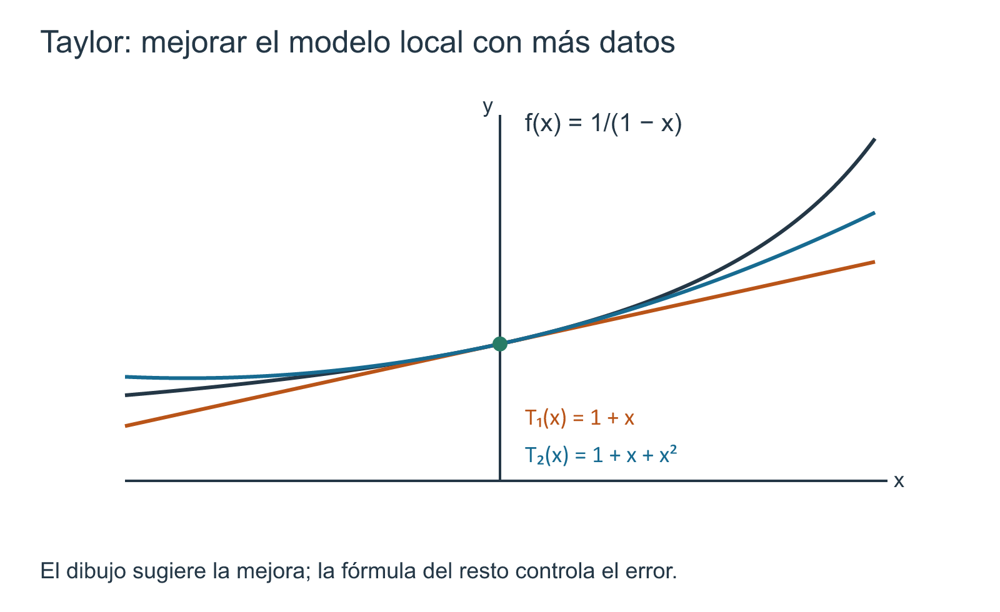

Derivadas superiores y fórmula de Taylor con resto
11 Derivadas superiores y fórmula de Taylor con resto
← Capítulo 10 · Índice del Tomo I · Capítulo 12 →
En el capítulo 6 aprendimos que la derivada no es solamente una pendiente. Si \(f\) es diferenciable en \(a\), la caracterización por linealización local (Teorema 6.2) permite escribir
\[ f(a+h)=f(a)+f'(a)h+o(h). \]
La recta tangente aparece así como un modelo de primer orden: después de retirar de la variación de \(f\) el término lineal \(f'(a)h\), el residuo es pequeño comparado con \(h\). Esta afirmación es local, cuantitativa y mucho más precisa que decir simplemente que la gráfica «se parece» a su tangente.
Pero la propia fórmula deja una pregunta abierta. Si \(f'\) también puede derivarse, y después podemos derivar de nuevo, ¿podemos utilizar esa información adicional para construir modelos locales mejores que una recta? ¿Existe un procedimiento que produzca un polinomio de grado \(2\), \(3\) o \(n\) a partir de las derivadas de \(f\) en un solo punto? Y, sobre todo, ¿cómo sabremos cuánto nos estamos equivocando al reemplazar la función por ese polinomio?
Ese será el problema central del capítulo. Las derivadas superiores proporcionarán los datos; el polinomio de Taylor organizará esos datos; y el resto medirá exactamente lo que el polinomio todavía no captura. La fórmula de Taylor no será presentada como una receta para «expandir» funciones, sino como un teorema finito con hipótesis y error controlado.
Hay una frontera que conviene fijar desde el comienzo. Para un entero \(n\) concreto estudiaremos una suma finita
\[ P(x)=c_0+c_1(x-a)+\cdots+c_n(x-a)^n \]
y una identidad de la forma
\[ f(x)=P(x)+R_n(x). \]
No afirmaremos todavía que una función sea igual a una suma infinita de potencias. Pasar de polinomios de grado finito a series de Taylor exige estudiar convergencia y analiticidad; ese problema pertenece al Tomo II. Aquí cada aproximación tendrá un grado fijado y cada afirmación deberá conservar su término de error.
11.1 De la aproximación lineal a la aproximación polinómica
La recta tangente utiliza dos datos
La aproximación lineal en \(a\) puede escribirse como
\[ L_a(x)=f(a)+f'(a)(x-a). \]
Para construirla necesitamos exactamente dos números:
\[ f(a),\qquad f'(a). \]
El primero obliga a la recta a pasar por \((a,f(a))\); el segundo fija su pendiente. Dicho de otra manera,
\[ L_a(a)=f(a), \qquad L_a'(a)=f'(a). \]
La aproximación lineal reproduce en el punto central el valor de la función y su primera derivada. Esta observación sugiere una estrategia general: si disponemos también de \(f''(a)\), ¿podremos construir un polinomio cuadrático que reproduzca tres datos? Si conocemos sucesivamente más derivadas, ¿podremos exigir
\[ P(a)=f(a), \quad P'(a)=f'(a), \quad P''(a)=f''(a), \quad\ldots? \]
Antes de responder para una función arbitraria, conviene invertir el problema y estudiar un caso en el que ya sabemos cuál debe ser la respuesta.
Un polinomio revela el patrón de los coeficientes
Ejemplo 11.1 Leer los coeficientes mediante derivadas. Fijemos \(a\in\mathbb R\) y consideremos
\[ p(x)=2-3(x-a)+5(x-a)^2-2(x-a)^3. \]
Evaluar en el centro elimina todos los términos que contienen \(x-a\):
\[ p(a)=2. \]
Derivando una vez,
\[ p'(x)=-3+10(x-a)-6(x-a)^2, \]
de modo que
\[ p'(a)=-3. \]
Una segunda y una tercera derivación dan
\[ p''(x)=10-12(x-a), \qquad p'''(x)=-12, \]
y por tanto
\[ p''(a)=10, \qquad p'''(a)=-12. \]
Ahora recuperemos los coeficientes originales:
\[ 2=p(a), \qquad -3=p'(a), \qquad 5=\frac{p''(a)}{2}, \qquad -2=\frac{p'''(a)}{6}. \]
Como \(2=2!\) y \(6=3!\), el mismo polinomio puede escribirse como
\[ p(x) = p(a) +p'(a)(x-a) +\frac{p''(a)}{2!}(x-a)^2 +\frac{p'''(a)}{3!}(x-a)^3. \]
La aparición de los factoriales no es decorativa. Cada vez que derivamos \((x-a)^k\) disminuye la potencia y aparece un factor entero; después de \(k\) derivaciones, al evaluar en \(a\), sobrevive exactamente el factor
\[ k!=k(k-1)\cdots2\cdot1. \]
Este cálculo permite anticipar una regla que más adelante demostraremos en general. Si
\[ P(x)=c_0+c_1(x-a)+\cdots+c_n(x-a)^n, \]
entonces las derivadas sucesivas evaluadas en \(a\) aíslan los coeficientes uno a uno:
\[ P^{(k)}(a)=k!\,c_k, \qquad 0\le k\le n, \]
si adoptamos la convención \(P^{(0)}=P\) y \(0!=1\). Por consiguiente, si queremos que un polinomio reproduzca los datos
\[ f(a),f'(a),\ldots,f^{(n)}(a), \]
el candidato natural tendrá necesariamente coeficientes
\[ c_k=\frac{f^{(k)}(a)}{k!}. \]
Todavía no hemos definido formalmente toda la notación de derivadas de orden arbitrario ni hemos demostrado la existencia o unicidad de ese polinomio para una función dada. Eso será trabajo de §§11.2–11.4. Por ahora interesa reconocer de dónde surge la forma de los coeficientes: no procede de memorizar una fórmula de Taylor, sino de preguntar qué polinomio puede compartir con \(f\) un número prescrito de derivadas en el punto central.
Coincidir en el centro no controla todavía el error
Aquí aparece una distinción esencial. Supongamos que encontramos un polinomio \(P\) que satisface
\[ P^{(k)}(a)=f^{(k)}(a) \qquad(0\le k\le n). \]
Eso describe una coincidencia de datos en el punto \(a\). No demuestra por sí solo cuánto se separan \(P(x)\) y \(f(x)\) cuando \(x\ne a\).
Para no ocultar este problema detrás del símbolo \(\approx\), definiremos siempre el error por una identidad exacta:
\[ R_n(x):=f(x)-P(x). \]
Entonces
\[ f(x)=P(x)+R_n(x) \]
es una igualdad, no una aproximación informal. La verdadera tarea analítica consiste en estudiar \(R_n\).
En el caso lineal ya conocemos una respuesta. Si
\[ P(x)=L_a(x)=f(a)+f'(a)(x-a), \]
el teorema de linealización afirma que, escribiendo \(x=a+h\),
\[ R_1(a+h)=o(h). \]
Así, el residuo es pequeño frente a la primera potencia del incremento. Es razonable esperar que, al hacer coincidir más derivadas, aparezcan potencias más altas de \(h\) y que podamos obtener un control más fuerte. Pero esa expectativa debe convertirse en un teorema: igualar derivadas no sustituye una estimación del resto.
Una expresión como
\[ f(x)\approx f(a)+f'(a)(x-a)+\frac{f''(a)}{2!}(x-a)^2 \]
solo tiene contenido matemático cuando se especifica qué significa el símbolo \(\approx\) o se proporciona una cota para la diferencia. En este capítulo preferiremos la forma exacta
\[ f(x)=P(x)+R(x) \]
y preguntaremos después qué sabemos demostrar sobre \(R(x)\).

Tres preguntas diferentes que no debemos fusionar
El estudio de Taylor separará tres problemas.
El primero es algebraico: dados los números
\[ f(a),f'(a),\ldots,f^{(n)}(a), \]
¿cuál es el polinomio de grado a lo sumo \(n\) que reproduce esos datos? Aquí aparecerán los factoriales y la unicidad.
El segundo es analítico: bajo qué hipótesis sobre \(f\) podemos escribir el error en una forma que dependa de una derivada de orden superior en algún punto intermedio. Aquí reaparecerá el teorema de Rolle, aplicado de manera iterada.
El tercero es cuantitativo: si conocemos una cota para esa derivada superior en todo un intervalo, ¿qué cota concreta obtenemos para \(|R_n(x)|\)? Esta será la pieza que permita hablar rigurosamente de precisión.
Confundir estas preguntas produce errores típicos. Calcular correctamente un polinomio no prueba que el resto sea pequeño; saber que el resto tiende a cero no proporciona necesariamente una cota numérica; y una cota válida para una derivada en el centro no controla automáticamente su valor en todos los puntos intermedios que pueda seleccionar un teorema de existencia.
Una fórmula finita no es una serie infinita
Supongamos, por ejemplo, que para cada entero fijo \(n\) logramos construir un polinomio \(P_n\). De ahí no se sigue que podamos escribir
\[ f(x)=\lim_{n\to\infty}P_n(x), \]
ni mucho menos que una suma infinita de los coeficientes obtenidos converja a \(f(x)\). La variable \(n\) introduce un nuevo proceso de límite, diferente del límite \(x\to a\) que define la aproximación local.
En este tomo mantendremos \(n\) fijo. La fórmula de Taylor que demostraremos tendrá la arquitectura
\[ \boxed{ \text{función} = \text{polinomio finito determinado por derivadas} + \text{resto controlado} }. \]
El paso hacia \(n\to\infty\) requerirá estudiar sucesiones y series de funciones, convergencia y analiticidad. No es una consecuencia automática de poseer derivadas de todos los órdenes.
El caso de grado \(1\) no es una teoría distinta. El polinomio
\[ f(a)+f'(a)(x-a) \]
que ya conocemos es precisamente el primer miembro no trivial de la jerarquía que vamos a construir. Taylor no reemplaza la linealización: la prolonga a órdenes finitos superiores y añade un mecanismo explícito para estudiar el error.
Hacia las derivadas iteradas
La expresión \(f^{(n)}(a)\) que hemos utilizado de manera anticipada contiene una exigencia que todavía debemos hacer explícita. Para hablar de una tercera derivada no basta con que \(f'(a)\) y \(f''(a)\) aparezcan como números aislados: la segunda derivada debe existir como una función en puntos próximos para que pueda volver a derivarse. A cada iteración puede cambiar el dominio en el que la siguiente derivada está definida.
Por eso el siguiente paso no será memorizar el polinomio de Taylor. En §11.2 definiremos cuidadosamente las derivadas de orden superior, sus dominios y la notación \(f^{(n)}\). Solo entonces podremos demostrar qué operaciones sobreviven al repetir la derivación y, finalmente, qué polinomio queda determinado por esos datos.
Antes de seguir. En Ejemplo 11.1, ¿por qué la tercera derivada permite recuperar el coeficiente cúbico pero elimina todos los términos de grado menor? Si un polinomio \(P\) coincide con \(f\) en sus primeras \(n\) derivadas en \(a\), ¿qué parte de esa información es puramente algebraica y qué parte falta para justificar que \(P(x)\) sea una buena aproximación cuando \(x\) se aleja de \(a\)? ¿Qué nuevo problema aparece si intentamos dejar que \(n\) tienda a infinito?
11.2 Derivadas de orden superior: iteración, dominios y notación
La segunda derivada apareció en el capítulo anterior porque queríamos estudiar cómo cambia la primera. Ahora necesitamos convertir esa idea en una construcción que pueda repetirse cualquier número finito de veces. El punto delicado no es la notación, sino el dominio: para derivar de nuevo, la derivada anterior debe existir como función en puntos próximos.
Derivar una función y derivar un número no son la misma operación
Saber que \(f'(a)\) existe proporciona un número. Para preguntar por \(f''(a)\) necesitamos algo más: \(f'\) debe estar definida en un conjunto que tenga a \(a\) como punto de acumulación. Solo entonces tiene sentido formar el cociente incremental de \(f'\).
Por ejemplo, si una función está definida y es diferenciable únicamente en el punto \(a\) dentro de cierto dominio muy disperso, la frase «derivemos otra vez» puede carecer de significado. La iteración siempre actúa sobre una función derivada, no sobre el valor aislado de una derivada.
Definición 11.1 Derivadas sucesivas. Sea \(I\subseteq\mathbb R\) un intervalo abierto y sea \(f:I\to\mathbb R\).
Definimos recursivamente
\[ f^{(0)}:=f. \]
Si \(f^{(k)}\) está definida en un intervalo abierto \(I_k\subseteq I\) y es diferenciable en los puntos de un intervalo abierto \(I_{k+1}\subseteq I_k\), definimos
\[ f^{(k+1)}:=(f^{(k)})' \qquad\text{en }I_{k+1}. \]
Cuando las primeras \(n\) iteraciones están definidas en un mismo intervalo abierto \(J\subseteq I\), decimos que \(f\) es \(n\) veces diferenciable en \(J\). Escribimos también
\[ f'=f^{(1)},\qquad f''=f^{(2)},\qquad f'''=f^{(3)}. \]
Para \(n\ge4\) preferiremos la notación \(f^{(n)}\), que evita una proliferación de primas.
La definición se ha formulado para intervalos abiertos porque las pruebas de Taylor trabajarán en un entorno de un segmento y aplicarán Rolle en puntos interiores. Cuando estudiemos restricciones a intervalos cerrados, las derivadas que intervengan serán las del intervalo abierto correspondiente o las de una extensión ya disponible; no ocultaremos derivadas laterales detrás de la notación ordinaria.
La cadena de dominios puede encogerse
Si definimos
\[ D_0:=\operatorname{dom}f, \qquad D_1:=\operatorname{dom}f', \qquad D_2:=\operatorname{dom}f'', \quad\ldots, \]
entonces necesariamente
\[ D_{k+1}\subseteq D_k. \]
No hay razón para que la inclusión sea una igualdad. Una función puede ser diferenciable en un punto en el que su derivada deje de ser diferenciable.
Ejemplo 11.2 Una primera derivada existe donde la segunda falla. Consideremos
\[ f(x)=x|x|. \]
Como vimos en el capítulo anterior,
\[ f(x)= \begin{cases} -x^2,&x<0,\\ x^2,&x\ge0, \end{cases} \]
y \(f'(0)=0\). Para \(x\ne0\),
\[ f'(x)=2|x|. \]
Por tanto \(f'\) existe en toda la recta. Sin embargo,
\[ \frac{f'(h)-f'(0)}{h}=\frac{2|h|}{h} \]
vale \(-2\) para \(h<0\) y \(2\) para \(h>0\). Luego \(f''(0)\) no existe. Aquí
\[ D_1=\mathbb R, \qquad D_2=\mathbb R\setminus\{0\}. \]
El ejemplo impide interpretar \(f''\) como una operación meramente formal aplicada a una expresión: primero debe existir la función \(f'\) en los puntos relevantes y después debemos comprobar su diferenciabilidad.
Existencia y continuidad son niveles diferentes
Para Taylor necesitaremos distinguir «tener derivadas» de «tener derivadas continuas».
Definición 11.2 Clase \(C^n\). Sea \(I\) un intervalo abierto y \(n\in\mathbb N\). Diremos que
\[ f\in C^n(I) \]
si existen \(f^{(k)}\) en todo \(I\) para \(0\le k\le n\) y cada una de esas funciones es continua en \(I\). Por convención, \(C^0(I)\) significa simplemente continuidad.
La notación
\[ f\in C^n \]
siempre debe entenderse respecto de un dominio indicado o claro por el contexto.
Ser \(n\) veces diferenciable no obliga, por definición, a que \(f^{(n)}\) sea continua. En cambio, si existe \(f^{(n+1)}\) en un intervalo, entonces \(f^{(n)}\) es diferenciable allí y por Teorema 6.1 es automáticamente continua allí. Esta observación será útil para separar qué continuidad es consecuencia y cuál es una hipótesis adicional.
Polinomios: la iteración termina
Para un monomio \((x-a)^m\), las reglas de derivación ya demostradas dan, mientras \(0\le k\le m\),
\[ \frac{d^k}{dx^k}(x-a)^m = \frac{m!}{(m-k)!}(x-a)^{m-k}. \]
En particular,
\[ \left.\frac{d^k}{dx^k}(x-a)^m\right|_{x=a} = \begin{cases} 0,&k<m,\\ m!,&k=m. \end{cases} \]
y para \(k>m\) la derivada es idénticamente cero. Así, un polinomio de grado \(m\) posee derivadas de todos los órdenes, pero toda derivada de orden mayor que \(m\) es la función cero.
Ejemplo 11.3 Un grado se detecta por la última derivada no nula. Sea
\[ p(x)=4x^5-3x^3+7x-2. \]
Las derivadas cuarta, quinta y sexta son
\[ p^{(4)}(x)=480x, \qquad p^{(5)}(x)=480, \qquad p^{(6)}(x)=0. \]
El hecho de que \(p^{(6)}\) sea cero no significa que el proceso de derivación deje de estar definido: la función cero vuelve a derivarse y sigue dando cero. Así, \(p\in C^n(\mathbb R)\) para todo entero \(n\ge0\).
Qué información contiene \(f^{(n)}(a)\)
El valor \(f^{(n)}(a)\) es local: describe la tasa de cambio de \(f^{(n-1)}\) en \(a\). Pero la fórmula de Taylor con resto seleccionará un punto intermedio \(c\) que no conocemos de antemano. Por eso, cuando queramos una cota numérica del error, un único valor \(f^{(n+1)}(a)\) no bastará: necesitaremos controlar \(f^{(n+1)}\) en todo el segmento relevante.
Las proposiciones
- «\(f^{(n)}(a)\) existe»;
- «\(f^{(n)}\) existe en un intervalo alrededor de \(a\)»;
- «\(f\in C^n\) en ese intervalo»
no son sinónimas. La primera es puntual; la segunda permite seguir trabajando con \(f^{(n)}\) como función; la tercera añade continuidad. Cada teorema del capítulo especificará cuál necesita.
Antes de seguir. Si \(f''(a)\) existe, ¿qué función tuvo que ser derivada para producir ese número? ¿Por qué la existencia de \(f^{(n+1)}\) en un intervalo fuerza continuidad de \(f^{(n)}\) allí? ¿Qué parte de la cadena de dominios falló en Ejemplo 11.2?
11.3 Álgebra de derivadas superiores
Las reglas del capítulo 7 pueden iterarse. Para sumas, la repetición es inmediata: si las derivadas pertinentes existen,
\[ (af+bg)^{(n)}=af^{(n)}+bg^{(n)}. \]
El producto es más interesante. Ya sabemos que
\[ (fg)'=f'g+fg'. \]
Al derivar una vez más aparecen tres términos después de reunir los dos términos centrales:
\[ (fg)''=f''g+2f'g'+fg''. \]
La siguiente derivación produce coeficientes \(1,3,3,1\). El patrón es el triángulo de Pascal, y la razón no es casual: en cada paso cada término puede recibir la nueva derivada en el factor izquierdo o en el derecho.
Proposición 11.1 Fórmula de Leibniz para la derivada \(n\)-ésima de un producto. Sea \(I\) un intervalo abierto, \(n\in\mathbb N\) y sean \(f,g:I\to\mathbb R\) \(n\) veces diferenciables. Entonces \(fg\) es \(n\) veces diferenciable y
\[ \boxed{ (fg)^{(n)} = \sum_{k=0}^{n}\binom{n}{k} f^{(k)}g^{(n-k)}. } \]
Demostración. Procedemos por inducción sobre \(n\).
Para \(n=0\) la fórmula dice simplemente
\[ fg=\binom00f^{(0)}g^{(0)}. \]
Supongamos válida la identidad para cierto \(n\). Como \(f\) y \(g\) poseen una derivada adicional, podemos derivar término a término:
\[ \begin{aligned} (fg)^{(n+1)} &=\sum_{k=0}^{n}\binom nk \left(f^{(k+1)}g^{(n-k)}+f^{(k)}g^{(n-k+1)}\right)\\ &=\sum_{j=1}^{n+1}\binom n{j-1}f^{(j)}g^{(n+1-j)} +\sum_{j=0}^{n}\binom njf^{(j)}g^{(n+1-j)}. \end{aligned} \]
Los términos extremos tienen coeficiente \(1\). Para \(1\le j\le n\), la identidad de Pascal
\[ \binom n{j-1}+\binom nj=\binom{n+1}j \]
permite reunir las sumas. Obtenemos
\[ (fg)^{(n+1)} = \sum_{j=0}^{n+1}\binom{n+1}{j} f^{(j)}g^{(n+1-j)}, \]
que es la fórmula para \(n+1\). La inducción queda cerrada. \(\square\)
Dónde se usan las hipótesis
La inducción no necesita continuidad de las derivadas. Necesita que cada término que se deriva esté realmente definido: para llegar al orden \(n\) debemos disponer de \(f^{(k)}\) y \(g^{(k)}\) hasta ese orden. La identidad combinatoria de Pascal organiza coeficientes; las reglas de producto y suma justifican el paso analítico.
Ejemplo 11.4 Derivar un producto sin expandirlo. Sea
\[ h(x)=x^3(x-1)^4. \]
Para calcular \(h^{(5)}\) con Leibniz solo pueden contribuir los índices para los que \(k\le3\) y \(5-k\le4\), es decir \(k=1,2,3\). Por tanto,
\[ h^{(5)} = \binom51(x^3)'((x-1)^4)^{(4)} +\binom52(x^3)''((x-1)^4)^{(3)} +\binom53(x^3)'''((x-1)^4)''. \]
Como
\[ (x^3)'=3x^2, \quad (x^3)''=6x, \quad (x^3)'''=6, \]
y
\[ ((x-1)^4)^{(4)}=24, \quad ((x-1)^4)^{(3)}=24(x-1), \quad ((x-1)^4)''=12(x-1)^2, \]
resulta
\[ h^{(5)}(x) =360x^2+1440x(x-1)+720(x-1)^2. \]
La expansión final puede servir como control, pero no era necesaria para organizar la derivación.
Una identidad útil para potencias centradas
Para \(m,n\in\mathbb N\),
\[ \left((x-a)^m\right)^{(n)} = \begin{cases} \dfrac{m!}{(m-n)!}(x-a)^{m-n},&n\le m,\\[6pt] 0,&n>m. \end{cases} \]
Esta fórmula será la pieza algebraica central de la unicidad del polinomio de Taylor. Al evaluar en \(a\), todas las potencias centradas desaparecen excepto aquella cuyo grado coincide exactamente con el número de derivaciones.
Corolario 11.1 Derivadas de un polinomio centrado. Si
\[ P(x)=\sum_{j=0}^{m}c_j(x-a)^j, \]
entonces, para \(0\le k\le m\),
\[ \boxed{P^{(k)}(a)=k!\,c_k.} \]
Además \(P^{(k)}\equiv0\) para todo \(k>m\).
Demostración. Por linealidad, derivamos término a término. Al evaluar en \(a\), los términos con \(j>k\) conservan una potencia positiva de \(x-a\) y valen cero; los términos con \(j<k\) ya han desaparecido; el término \(j=k\) vale \(k!c_k\). \(\square\)
Una advertencia sobre composiciones
No existe una versión de la regla de la cadena para derivadas superiores tan simple como
\[ (f\circ g)^{(n)}=(f^{(n)}\circ g)(g')^n. \]
Ya para \(n=2\) aparece
\[ (f\circ g)'' =(f''\circ g)(g')^2+(f'\circ g)g''. \]
En este capítulo no necesitamos desarrollar la fórmula combinatoria general para composiciones. Cuando una derivada superior de una composición concreta sea necesaria, aplicaremos repetidamente las reglas ya probadas y controlaremos cada término. La fórmula de Taylor puede construirse sin introducir una maquinaria combinatoria adicional.
Antes de seguir. ¿Por qué los coeficientes binomiales aparecen en Leibniz? ¿Qué términos sobreviven al evaluar \(P^{(k)}\) en el centro \(a\)? ¿En qué punto de la demostración se usa que existen derivadas hasta orden \(n\) y no solo sus valores en un único punto?
11.4 El polinomio de Taylor y su unicidad
La pregunta algebraica de §11.1 ya puede resolverse exactamente. Dados los números
\[ f(a),f'(a),\ldots,f^{(n)}(a), \]
buscamos un polinomio de grado a lo sumo \(n\) que reproduzca todos esos datos en \(a\).
Definición 11.3 Polinomio de Taylor finito. Sea \(f\) una función cuyas derivadas \(f^{(k)}(a)\) existen para \(0\le k\le n\). Definimos el polinomio de Taylor de grado \(n\) de \(f\) centrado en \(a\) por
\[ \boxed{ T_{n,a}f(x) := \sum_{k=0}^{n}\frac{f^{(k)}(a)}{k!}(x-a)^k. } \]
Usamos las convenciones \(f^{(0)}=f\) y \(0!=1\).
La palabra «de grado \(n\)» describe la truncación elegida; el grado algebraico efectivo puede ser menor si \(f^{(n)}(a)=0\) u otros coeficientes finales se anulan.
Teorema 11.1 Caracterización y unicidad del polinomio de Taylor. Bajo las hipótesis de Definición 11.3, \(T_{n,a}f\) es el único polinomio \(P\) de grado a lo sumo \(n\) que satisface
\[ P^{(k)}(a)=f^{(k)}(a) \qquad(0\le k\le n). \]
Demostración. Escribamos
\[ T_{n,a}f(x)=\sum_{j=0}^{n}c_j(x-a)^j, \qquad c_j:=\frac{f^{(j)}(a)}{j!}. \]
Por Corolario 11.1,
\[ (T_{n,a}f)^{(k)}(a)=k!c_k=f^{(k)}(a), \]
así que el polinomio construido posee la propiedad requerida.
Para la unicidad, sea
\[ P(x)=\sum_{j=0}^{n}d_j(x-a)^j \]
un polinomio con las mismas derivadas en \(a\). De nuevo por Corolario 11.1,
\[ k!d_k=P^{(k)}(a)=f^{(k)}(a), \]
por lo que
\[ d_k=\frac{f^{(k)}(a)}{k!}=c_k \]
para cada \(k\). Todos los coeficientes coinciden y \(P=T_{n,a}f\). \(\square\)
El caso lineal reaparece exactamente
Para \(n=1\),
\[ T_{1,a}f(x)=f(a)+f'(a)(x-a), \]
que es la linealización del capítulo 6. Para \(n=2\),
\[ T_{2,a}f(x)=f(a)+f'(a)(x-a)+\frac{f''(a)}{2}(x-a)^2. \]
Nada se ha dicho todavía sobre el error de usar esos polinomios fuera del centro. Teorema 11.1 es un teorema de interpolación de derivadas en un punto, no un teorema de aproximación cuantitativa.
Ejemplo 11.5 Dos centros producen dos polinomios diferentes. Para
\[ f(x)=\frac1x, \]
el dominio excluye \(0\). En \(a=1\),
\[ f(1)=1, \qquad f'(1)=-1, \qquad f''(1)=2, \]
y por tanto
\[ T_{2,1}f(x)=1-(x-1)+(x-1)^2. \]
En \(a=2\),
\[ f(2)=\frac12, \qquad f'(2)=-\frac14, \qquad f''(2)=\frac14, \]
de modo que
\[ T_{2,2}f(x) =\frac12-\frac14(x-2)+\frac18(x-2)^2. \]
Un polinomio de Taylor siempre lleva incorporado un centro. Cambiar \(a\) cambia los datos que debe reproducir y, en general, cambia el polinomio.
Funciones distintas pueden compartir el mismo polinomio
Sea \(n\) fijo y consideremos, centrados en \(a\),
\[ f(x)=0, \qquad g(x)=(x-a)^{n+1}. \]
Para todo \(0\le k\le n\),
\[ f^{(k)}(a)=g^{(k)}(a)=0. \]
Por unicidad,
\[ T_{n,a}f=T_{n,a}g=0. \]
Sin embargo \(f\) y \(g\) no son la misma función. El polinomio de orden \(n\) contiene exactamente un número finito de datos locales; no codifica la función completa.
El resto se define por una identidad
A partir de ahora escribiremos
\[ R_{n,a}f(x) := f(x)-T_{n,a}f(x). \]
Entonces
\[ \boxed{f(x)=T_{n,a}f(x)+R_{n,a}f(x)} \]
es exacta siempre que ambos miembros estén definidos. Todo contenido aproximativo vendrá de demostrar propiedades de \(R_{n,a}f\).
El teorema de unicidad responde: ¿qué polinomio de grado \(\le n\) comparte esas derivadas? No responde: ¿cuán cerca está de la función en otro punto? La segunda pregunta requiere el resto y, por tanto, información sobre la función entre el centro y el punto evaluado.
Antes de seguir. ¿Por qué \(T_{n,a}f\) puede tener grado efectivo menor que \(n\)? Si dos funciones comparten sus primeras \(n\) derivadas en \(a\), ¿qué podemos afirmar sobre sus polinomios de Taylor? ¿Qué no podemos afirmar todavía sobre sus valores fuera de \(a\)?
11.5 Un lema de Rolle iterado
El teorema de Rolle transforma dos ceros de una función en un cero de su derivada situado entre ellos. Si además una de las derivadas se anula en uno de los extremos, podemos repetir el proceso. Esa iteración será el motor del resto de Lagrange.
Del primer cero a una cadena de ceros
Supongamos que \(F(a)=F(x)=0\). Rolle produce un punto \(c_1\) entre \(a\) y \(x\) con \(F'(c_1)=0\). Si también sabemos que \(F'(a)=0\), podemos aplicar Rolle a \(F'\) entre \(a\) y \(c_1\) y encontrar \(c_2\) con \(F''(c_2)=0\). Si además \(F''(a)=0\), repetimos.
La geometría de los intervalos se va anidando:
\[ a<c_n<\cdots<c_2<c_1<x \]
cuando \(a<x\). Si \(x<a\), el mismo argumento se aplica con la orientación invertida. Lo relevante es la palabra entre, no el orden elegido al escribir los puntos.
Lema 11.1 Lema de Rolle iterado. Sea \(J\) un intervalo abierto, sean \(a,x\in J\) con \(a\ne x\), y sea \(F:J\to\mathbb R\) una función \(n+1\) veces diferenciable en \(J\). Supongamos que
\[ F(a)=F'(a)=\cdots=F^{(n)}(a)=0 \]
y además
\[ F(x)=0. \]
Entonces existe un punto \(c\) estrictamente entre \(a\) y \(x\) tal que
\[ \boxed{F^{(n+1)}(c)=0.} \]
Demostración. Basta tratar \(a<x\); si \(x<a\), intercambiamos el orden de los extremos en cada aplicación de Rolle.
Como \(F\) es diferenciable en \(J\), es continua en \([a,x]\). De \(F(a)=F(x)=0\), Teorema 9.2 proporciona \(c_1\in(a,x)\) con
\[ F'(c_1)=0. \]
Ahora \(F'(a)=0\) por hipótesis. La función \(F'\) es diferenciable, luego continua, en el intervalo que contiene \([a,c_1]\). Aplicando Rolle a \(F'\) entre \(a\) y \(c_1\) obtenemos \(c_2\in(a,c_1)\) con
\[ F''(c_2)=0. \]
Continuamos. Tras \(r\) pasos hemos obtenido
\[ a<c_r<\cdots<c_1<x, \qquad F^{(r)}(c_r)=0. \]
Como \(F^{(r)}(a)=0\) para \(r\le n\), Rolle aplicado a \(F^{(r)}\) en \([a,c_r]\) produce \(c_{r+1}\) con
\[ F^{(r+1)}(c_{r+1})=0. \]
Al completar \(n+1\) aplicaciones obtenemos un punto \(c_{n+1}\) entre \(a\) y \(x\) tal que
\[ F^{(n+1)}(c_{n+1})=0. \]
Tomamos \(c=c_{n+1}\). \(\square\)
Auditoría de hipótesis
Cada aplicación de Rolle necesita continuidad en el intervalo cerrado usado y diferenciabilidad en su interior. No hemos supuesto por separado todas esas continuidades: la existencia de la derivada siguiente garantiza que la derivada anterior es diferenciable y, por Teorema 6.1, continua.
La hipótesis
\[ F^{(k)}(a)=0 \]
para \(k=0,\ldots,n\) no es ornamental. Después del primer paso, cada nueva aplicación de Rolle compara el cero recién encontrado con el cero ya disponible en \(a\) para la derivada del mismo orden.
Ejemplo 11.6 Un caso de orden tres. Supongamos que \(F\) es tres veces diferenciable,
\[ F(a)=F'(a)=F''(a)=0, \qquad F(x)=0, \qquad a<x. \]
Rolle sobre \(F\) produce \(c_1\in(a,x)\) con \(F'(c_1)=0\). Rolle sobre \(F'\) entre \(a\) y \(c_1\) produce \(c_2\) con \(F''(c_2)=0\). Rolle sobre \(F''\) entre \(a\) y \(c_2\) produce \(c_3\) con \(F'''(c_3)=0\).
Obsérvese que no hemos supuesto tres ceros distintos de \(F\). Un solo cero en \(a\), acompañado por ceros de sus derivadas, actúa como un cero de orden diferencial alto.
Qué no dice el lema
El lema no localiza \(c\) ni afirma que sea único. Tampoco afirma que todo punto intermedio satisfaga la ecuación. Es una herramienta de existencia. En Taylor, precisamente esa falta de localización obligará a usar una cota válida en todo el intervalo si queremos reemplazar \(f^{(n+1)}(c)\) por un número conocido.
Antes de seguir. ¿Dónde se usa \(F'(a)=0\) después de la primera aplicación de Rolle? ¿Por qué no necesitamos postular continuidad separada de \(F^{(n)}\)? ¿Qué cambiaría en la notación, pero no en la lógica, si \(x<a\)?
11.6 Fórmula de Taylor con resto de Lagrange
Ya tenemos todas las piezas. Fijaremos un grado \(n\), un centro \(a\) y un punto \(x\). El polinomio \(T_{n,a}f\) reproduce las derivadas hasta orden \(n\) en \(a\). Para medir el error construiremos una función auxiliar que tenga un cero adicional en \(x\) sin destruir esos ceros de derivadas en \(a\).
Teorema 11.2 Teorema de Taylor con resto de Lagrange. Sea \(J\) un intervalo abierto, sean \(a,x\in J\) y sea \(n\in\mathbb N_0\). Supongamos que \(f:J\to\mathbb R\) posee derivadas hasta orden \(n+1\) en todo \(J\). Si \(x\ne a\), existe un punto \(c\) estrictamente entre \(a\) y \(x\) tal que
\[ \boxed{ f(x) = \sum_{k=0}^{n}\frac{f^{(k)}(a)}{k!}(x-a)^k + \frac{f^{(n+1)}(c)}{(n+1)!}(x-a)^{n+1}. } \]
Equivalentemente,
\[ \boxed{ R_{n,a}f(x) = \frac{f^{(n+1)}(c)}{(n+1)!}(x-a)^{n+1}. } \]
No se supone continuidad de \(f^{(n+1)}\).
Demostración. Fijemos \(x\ne a\) y escribamos
\[ P(t):=T_{n,a}f(t), \qquad R:=f(x)-P(x). \]
Definamos
\[ \lambda:=\frac{R}{(x-a)^{n+1}} \]
y la función auxiliar
\[ F(t):=f(t)-P(t)-\lambda(t-a)^{n+1}. \]
Por la elección de \(\lambda\),
\[ F(x) =f(x)-P(x)-R=0. \]
Por Teorema 11.1, \(P^{(k)}(a)=f^{(k)}(a)\) para \(0\le k\le n\). Además, para esos órdenes,
\[ \left((t-a)^{n+1}\right)^{(k)}\Big|_{t=a}=0. \]
Por tanto
\[ F^{(k)}(a)=0 \qquad(0\le k\le n). \]
La función \(F\) posee \(n+1\) derivadas en \(J\): \(f\) las posee por hipótesis y los otros términos son polinomios. Aplicamos Lema 11.1. Existe \(c\) estrictamente entre \(a\) y \(x\) tal que
\[ F^{(n+1)}(c)=0. \]
Ahora \(P\) tiene grado a lo sumo \(n\), luego \(P^{(n+1)}\equiv0\), mientras
\[ \left((t-a)^{n+1}\right)^{(n+1)}=(n+1)!. \]
Así,
\[ 0 =F^{(n+1)}(c) =f^{(n+1)}(c)-\lambda(n+1)!. \]
Despejamos
\[ \lambda=\frac{f^{(n+1)}(c)}{(n+1)!}. \]
Recordando que \(R=\lambda(x-a)^{n+1}\) obtenemos
\[ R = \frac{f^{(n+1)}(c)}{(n+1)!}(x-a)^{n+1}, \]
que es la fórmula afirmada. \(\square\)
Dónde se usa cada hipótesis
La existencia de las derivadas hasta orden \(n\) permite construir \(P\) y garantizar el contacto en \(a\). La derivada de orden \(n+1\) permite aplicar Rolle una vez más y evaluar \(F^{(n+1)}\) en el punto intermedio. El hecho de trabajar dentro de un intervalo abierto asegura que el segmento entre \(a\) y \(x\) permanece en el dominio y que las derivadas requeridas están disponibles alrededor de sus puntos interiores.
No necesitamos que \(f^{(n+1)}\) sea continua. El teorema afirma que existe un \(c\) donde esa derivada toma el valor necesario; la prueba obtiene ese punto por Rolle, no por el teorema del valor intermedio aplicado a \(f^{(n+1)}\).
Los primeros casos
Para \(n=0\), el polinomio es la constante \(f(a)\) y Taylor da
\[ f(x)=f(a)+f'(c)(x-a), \]
que es exactamente el teorema del valor medio de Lagrange escrito de otra forma.
Para \(n=1\),
\[ f(x) =f(a)+f'(a)(x-a) +\frac{f''(c)}{2}(x-a)^2. \]
La recta tangente aparece acompañada por un error cuadrático cuyo coeficiente usa la segunda derivada en un punto intermedio.
Para \(n=2\),
\[ f(x) =f(a)+f'(a)(x-a)+\frac{f''(a)}2(x-a)^2 +\frac{f'''(c)}6(x-a)^3. \]
Ejemplo 11.7 Taylor exacto para un polinomio. Sea
\[ f(x)=x^4-2x^2+3 \]
y tomemos \(a=1\), \(n=4\). Como \(f\) ya es un polinomio de grado \(4\), Teorema 11.1 implica
\[ T_{4,1}f=f \]
como polinomios. Además \(f^{(5)}\equiv0\), de modo que el resto de Lagrange es cero para cualquier punto intermedio. En este caso la «aproximación» de grado \(4\) es una identidad global exacta.
Si usamos solamente \(n=2\), el resto ya no tiene por qué anularse: hemos decidido conservar menos información aun cuando la función disponga de más.
El punto \(c\) depende del problema
La notación
\[ R_n(x)=\frac{f^{(n+1)}(c)}{(n+1)!}(x-a)^{n+1} \]
no define en general una función explícita \(c=c(x)\). El teorema asegura para cada \(x\) la existencia de al menos un punto intermedio adecuado. Dos valores diferentes de \(x\) pueden requerir puntos distintos, y para un mismo \(x\) puede haber más de uno.
Esta es la razón por la que una estimación útil del error no intentará «encontrar \(c\)». Buscará una cota que funcione para todos los posibles puntos intermedios.
La fórmula del teorema no dice simplemente que
\[ f(x)\approx T_{n,a}f(x). \]
Dice exactamente
\[ f(x)=T_{n,a}f(x)+R_{n,a}f(x), \]
y representa el resto mediante una derivada de orden superior en un punto intermedio. El símbolo de aproximación solo será legítimo después de estimar ese resto.
Antes de seguir. ¿Por qué elegimos \(\lambda\) dividiendo por \((x-a)^{n+1}\)? ¿Qué propiedad del polinomio \(P\) hace desaparecer su derivada de orden \(n+1\)? ¿En qué paso sería incorrecto reemplazar \(f^{(n+1)}(c)\) por \(f^{(n+1)}(a)\)?
11.7 Cotas del resto y control cuantitativo del error
La fórmula de Lagrange contiene un punto \(c\) desconocido. Para convertirla en una herramienta cuantitativa debemos dominar la derivada de orden superior en todo el trayecto que ese punto podría ocupar.
Corolario 11.2 Cota uniforme del resto de Taylor. Bajo las hipótesis de Teorema 11.2, supongamos además que existe \(M\ge0\) tal que
\[ |f^{(n+1)}(t)|\le M \]
para todo \(t\) situado entre \(a\) y \(x\). Entonces
\[ \boxed{ |R_{n,a}f(x)| \le \frac{M}{(n+1)!}|x-a|^{n+1}. } \]
Demostración. El teorema de Taylor proporciona un punto intermedio \(c\) con
\[ R_{n,a}f(x) = \frac{f^{(n+1)}(c)}{(n+1)!}(x-a)^{n+1}. \]
Tomando valores absolutos y usando \(|f^{(n+1)}(c)|\le M\) obtenemos la desigualdad. \(\square\)
La cota debe cubrir el segmento completo
Si \(a<x\), el punto \(c\) pertenece a \((a,x)\); si \(x<a\), pertenece a \((x,a)\). Una estimación de \(f^{(n+1)}\) válida solo en \(a\) no controla necesariamente ese punto. Tampoco basta una cota verificada en un subconjunto que el segmento pueda abandonar.
Ejemplo 11.8 Aproximar una función racional con certificado de error. Tomemos
\[ f(x)=\frac1{1+x} \]
en el intervalo \([-1/2,1/2]\) y centremos en \(a=0\). Sus derivadas iniciales son
\[ f(0)=1, \qquad f'(0)=-1, \qquad f''(0)=2, \]
de modo que
\[ T_{2,0}f(x)=1-x+x^2. \]
Además
\[ f'''(t)=-\frac6{(1+t)^4}. \]
Si \(|x|\le1/4\), todo punto entre \(0\) y \(x\) satisface \(t\in[-1/4,1/4]\), y por tanto
\[ 1+t\ge\frac34. \]
Así,
\[ |f'''(t)| \le \frac6{(3/4)^4} =\frac{512}{27}. \]
Por Corolario 11.2,
\[ \left| \frac1{1+x}-(1-x+x^2) \right| \le \frac{1}{6}\frac{512}{27}|x|^3 = \frac{256}{81}|x|^3 \]
para \(|x|\le1/4\).
La estimación no exige conocer el punto \(c\). Exige controlar una región que necesariamente lo contiene.
Error absoluto y objetivo de precisión
Si queremos garantizar
\[ |R_{n,a}f(x)|<\varepsilon, \]
una condición suficiente es
\[ \frac{M}{(n+1)!}|x-a|^{n+1}<\varepsilon. \]
Podemos usar esa desigualdad de dos maneras: fijado el grado \(n\), determinar cuán cerca de \(a\) debemos trabajar; o, en contextos donde sepamos controlar las derivadas de órdenes sucesivos, comparar grados finitos diferentes. En este capítulo no convertiremos la segunda posibilidad en un procedimiento infinito ni en una teoría de series.
Una cota puede ser correcta sin ser óptima
Si sabemos que
\[ |f^{(n+1)}(t)|\le M_1 \]
y también una cota menor \(M_2<M_1\), ambas producen certificados válidos; la segunda es simplemente más precisa. El propósito lógico de una cota es ser demostrada y cubrir todos los puntos posibles. Encontrar la mejor constante es un problema adicional.
La sustitución
\[ |R_n(x)|\le \frac{|f^{(n+1)}(a)|}{(n+1)!}|x-a|^{n+1} \]
no se deduce de Taylor salvo que hayamos demostrado previamente que \(|f^{(n+1)}(t)|\le|f^{(n+1)}(a)|\) en todo el segmento relevante. El teorema selecciona \(c\), no necesariamente \(a\).
Escala del error para un grado fijo
Si existe una cota \(M\) de \(|f^{(n+1)}|\) en un entorno fijo de \(a\), entonces para \(x\) en ese entorno
\[ |R_{n,a}f(x)| \le C|x-a|^{n+1}, \qquad C:=\frac{M}{(n+1)!}. \]
Esto se abrevia diciendo que el resto es de orden a lo sumo \(|x-a|^{n+1}\) localmente. En la sección siguiente volveremos a la notación de pequeño-\(o\) del capítulo 6 para expresar una forma más fina de contacto.
Antes de seguir. Si el punto \(c\) es desconocido, ¿por qué una cota uniforme resuelve el problema? ¿Qué diferencia hay entre obtener una cota correcta y obtener la mejor cota? ¿Cómo se transforma una cota del resto en una condición explícita sobre \(|x-a|\) para alcanzar una tolerancia dada?
11.8 Orden de contacto y residuo normalizado
La fórmula de Lagrange proporciona una estimación de orden \(n+1\) cuando existe una derivada adicional. Pero la idea de «compartir derivadas hasta orden \(n\)» admite otra lectura: después de quitar el polinomio de Taylor, el residuo se vuelve despreciable frente a \((x-a)^n\) bajo una hipótesis de continuidad natural.
Recordatorio: pequeño-\(o\)
Escribimos
\[ r(x)=o((x-a)^n) \qquad(x\to a) \]
si
\[ \lim_{x\to a,\,x\ne a} \frac{r(x)}{(x-a)^n}=0. \]
Cuando \(n\) es impar, el denominador cambia de signo; eso no altera la definición. Equivalentemente puede usarse \(|x-a|^n\) en el denominador al hablar del valor absoluto del cociente.
Proposición 11.2 Forma de Peano bajo regularidad \(C^n\). Sea \(I\) un intervalo abierto, \(a\in I\), \(n\ge1\) y \(f\in C^n(I)\). Entonces
\[ \boxed{ f(x)=T_{n,a}f(x)+o((x-a)^n) \qquad(x\to a). } \]
Demostración. Para \(x\ne a\) suficientemente próximo a \(a\), aplicamos Teorema 11.2 de orden \(n-1\). Como \(f\) posee \(n\) derivadas, existe un punto \(c_x\) entre \(a\) y \(x\) tal que
\[ f(x) =T_{n-1,a}f(x) +\frac{f^{(n)}(c_x)}{n!}(x-a)^n. \]
Restamos el término de orden \(n\) del polinomio completo:
\[ T_{n,a}f(x) =T_{n-1,a}f(x) +\frac{f^{(n)}(a)}{n!}(x-a)^n. \]
Por tanto
\[ \frac{f(x)-T_{n,a}f(x)}{(x-a)^n} = \frac{f^{(n)}(c_x)-f^{(n)}(a)}{n!}. \]
Como \(c_x\) está entre \(a\) y \(x\),
\[ |c_x-a|\le|x-a|, \]
de modo que \(c_x\to a\) cuando \(x\to a\). La continuidad de \(f^{(n)}\) en \(a\) implica
\[ f^{(n)}(c_x)-f^{(n)}(a)\to0. \]
El cociente anterior tiende a cero, que es precisamente la afirmación. \(\square\)
Por qué la continuidad aparece aquí
Taylor–Lagrange de orden \(n-1\) nos entrega \(f^{(n)}(c_x)\), mientras el polinomio de grado \(n\) contiene \(f^{(n)}(a)\). Para demostrar que la diferencia de ambos coeficientes desaparece cuando \(x\to a\), necesitamos que los valores de \(f^{(n)}\) cerca de \(a\) se acerquen a \(f^{(n)}(a)\). Esa es exactamente la continuidad utilizada en la prueba.
Si disponemos de \(f^{(n+1)}\) acotada en un entorno, Corolario 11.2 da incluso
\[ R_{n,a}f(x)=O((x-a)^{n+1}), \]
que implica la conclusión pequeño-\(o\) respecto de \((x-a)^n\). Pero Proposición 11.2 muestra que una derivada adicional no es necesaria bajo la hipótesis \(C^n\).
Contacto de dos funciones
Supongamos que \(f,g\in C^n(I)\) y
\[ f^{(k)}(a)=g^{(k)}(a) \qquad(0\le k\le n). \]
Entonces
\[ T_{n,a}f=T_{n,a}g. \]
Aplicando Proposición 11.2 a ambas y restando,
\[ f(x)-g(x)=o((x-a)^n). \]
En este sentido, compartir derivadas hasta orden \(n\) significa poseer contacto de orden al menos \(n\) en el centro. La afirmación es local; no dice que las funciones coincidan en un intervalo.
Ejemplo 11.9 Mismo contacto cuadrático, funciones distintas. Tomemos en \(a=0\)
\[ f(x)=x^2, \qquad g(x)=x^2+x^3. \]
Se cumple
\[ f(0)=g(0)=0, \qquad f'(0)=g'(0)=0, \qquad f''(0)=g''(0)=2. \]
Por tanto comparten \(T_{2,0}(x)=x^2\). Su diferencia es
\[ g(x)-f(x)=x^3=o(x^2). \]
Sin embargo, para todo \(x\ne0\) suficientemente pequeño siguen siendo valores distintos. El orden de contacto mide la rapidez con que se separan, no convierte dos funciones en una.
El primer término que no coincide
Si \(f,g\in C^m\) y sus derivadas coinciden hasta orden \(m-1\), pero
\[ f^{(m)}(a)\ne g^{(m)}(a), \]
entonces sus polinomios de Taylor empiezan a diferir precisamente en el término
\[ \frac{f^{(m)}(a)-g^{(m)}(a)}{m!}(x-a)^m. \]
Bajo las hipótesis de Proposición 11.2,
\[ f(x)-g(x) = \frac{f^{(m)}(a)-g^{(m)}(a)}{m!}(x-a)^m +o((x-a)^m). \]
Esta fórmula permite comparar escalas locales sin recurrir todavía a una teoría asintótica general.
Antes de seguir. ¿Dónde se usa la continuidad de \(f^{(n)}\) en la prueba de Peano? ¿Por qué \(c_x\to a\) aunque no tengamos una fórmula explícita para \(c_x\)? Si dos funciones comparten el polinomio de Taylor de grado \(n\), ¿qué información local aporta y qué información global sigue ausente?
11.9 Hipótesis, fallos y frontera con las series infinitas
Taylor es una herramienta poderosa precisamente porque sus conclusiones son precisas. Esa precisión se pierde si borramos las hipótesis o si reemplazamos una afirmación finita por otra infinita que todavía no ha sido demostrada.
Tener un polinomio no garantiza el orden siguiente
La definición de \(T_{n,a}f\) solo utiliza derivadas hasta orden \(n\) en \(a\). El resto de Lagrange de orden \(n\), en cambio, requiere una derivada de orden \(n+1\) en el intervalo relevante.
Consideremos
\[ f(x)=|x|^3. \]
La función es dos veces diferenciable en \(0\) y
\[ f(0)=f'(0)=f''(0)=0, \]
por lo que
\[ T_{2,0}f=0. \]
Sin embargo la tercera derivada no existe en \(0\): para \(x>0\), \(f'''(x)=6\), y para \(x<0\), \(f'''(x)=-6\). No podemos invocar Teorema 11.2 con \(n=2\) en un intervalo abierto que contenga el origen. El polinomio existe; esa forma particular del resto, no.
Una coincidencia finita nunca determina toda la función
Para cualquier grado fijo \(n\),
\[ f(x)=P(x), \qquad g(x)=P(x)+(x-a)^{n+1} \]
comparten todas las derivadas hasta orden \(n\) en \(a\), pero son funciones distintas. Por tanto ningún conjunto finito de datos
\[ f(a),\ldots,f^{(n)}(a) \]
determina la función en un entorno.
«Para cada \(n\)» y «al dejar \(n\to\infty\)» son afirmaciones distintas
Supongamos que una función posee derivadas de todos los órdenes y que, para cada entero fijo \(n\), podemos formar \(T_{n,a}f\). Eso produce una sucesión de polinomios
\[ T_{0,a}f, T_{1,a}f, T_{2,a}f, \ldots \]
pero no demuestra por sí solo que para un \(x\ne a\)
\[ T_{n,a}f(x)\to f(x). \]
Para concluirlo necesitaríamos estudiar el comportamiento de
\[ R_{n,a}f(x) \]
cuando el grado \(n\) tiende a infinito. Ese es un límite nuevo: ya no es \(x\to a\) con \(n\) fijo. La teoría correspondiente exige herramientas sobre sucesiones y series de funciones y pertenece al Tomo II.
La identidad
\[ f(x)=T_{n,a}f(x)+R_{n,a}f(x) \]
para cada \(n\) fijo no autoriza a borrar el resto y escribir una suma infinita. El paso
\[ n\to\infty \]
debe justificarse por separado. En este tomo no lo daremos por supuesto.
Una cota local tampoco es una afirmación global
Si Corolario 11.2 controla el resto para \(|x-a|\le r\), no hemos probado nada para puntos fuera de ese intervalo. El centro, el grado y la región de control son parte de los datos del certificado.
Ejemplo 11.10 Una aproximación puede mejorar localmente y empeorar lejos. Sea
\[ f(x)=\frac1{1+x} \]
centrada en \(0\). El polinomio cuadrático es
\[ P_2(x)=1-x+x^2. \]
La identidad algebraica
\[ \frac1{1+x}-(1-x+x^2) =-\frac{x^3}{1+x} \]
muestra el error exacto donde \(x\ne-1\). Cerca de \(0\), el numerador cúbico hace pequeño el error. Pero al aproximarnos a \(-1\), el denominador se hace arbitrariamente pequeño y el error crece sin límite. Un dato local no atraviesa una singularidad del dominio.
La inaplicabilidad de un teorema no prueba la negación de su conclusión
Si falta \(f^{(n+1)}\), no podemos usar el resto de Lagrange de orden \(n\). Eso no implica automáticamente que \(T_{n,a}f\) sea una mala aproximación ni que ninguna otra estimación sea posible. Como en capítulos anteriores, distinguir «el teorema no aplica» de «la conclusión es falsa» evita muchas demostraciones inválidas.
Antes de seguir. ¿Qué hipótesis falta para aplicar Taylor de orden dos a \(|x|^3\) alrededor de \(0\)? ¿Por qué una fórmula válida para todo \(n\) fijo no responde al problema \(n\to\infty\)? ¿Qué enseña Ejemplo 11.10 sobre la región donde una estimación local puede utilizarse?
11.10 Laboratorio de demostraciones y aproximaciones finitas
Esta sección reúne las decisiones que más fácilmente se automatizan mal. No añadiremos un nuevo teorema general; reconstruiremos la cadena de razonamiento y auditaremos qué puede concluirse en cada etapa.
Estación 1 — Elegir primero el objeto que se quiere controlar
Antes de calcular derivadas, fijemos cuatro datos:
- el centro \(a\);
- el punto o intervalo donde queremos evaluar;
- el grado \(n\);
- la tolerancia o el tipo de conclusión buscada.
Sin esos datos, «calcular Taylor» es una instrucción incompleta. El mismo \(f\) genera polinomios distintos según el centro y el grado.
Estación 2 — Reconstruir un polinomio a partir de sus derivadas
Supongamos que un polinomio \(P\) de grado a lo sumo \(3\) satisface
\[ P(2)=1, \quad P'(2)=-4, \quad P''(2)=6, \quad P'''(2)=12. \]
Por Teorema 11.1, sin resolver un sistema lineal en la base \(1,x,x^2,x^3\),
\[ P(x)=1-4(x-2)+3(x-2)^2+2(x-2)^3. \]
La base centrada convierte los datos derivados en coeficientes directamente.
Estación 3 — Separar el cálculo del polinomio de la prueba del error
Sea
\[ f(x)=\frac1x, \qquad a=1. \]
Podemos calcular \(T_{2,1}f\) usando solo derivadas en \(1\). Pero para certificar su error en \(x=6/5\) necesitamos estudiar
\[ f'''(t)=-\frac6{t^4} \]
en todo \([1,6/5]\). Como \(t\ge1\),
\[ |f'''(t)|\le6, \]
y entonces
\[ |R_{2,1}f(6/5)| \le \frac6{3!}\left(\frac15\right)^3 =\frac1{125}. \]
El cálculo del polinomio fue puntual; el certificado del error fue intervalar.
Estación 4 — Auditar una prueba circular
Considérese el argumento:
«El resto de Taylor tiene un cero de orden \(n+1\) en \(a\), así que debe ser igual a \(f^{(n+1)}(c)(x-a)^{n+1}/(n+1)!\).»
La primera parte solo describe derivadas nulas en el centro. La segunda parte ya es prácticamente la conclusión del teorema y no se sigue de manera algebraica. La reparación consiste en construir la función auxiliar de §11.6 y aplicar el lema de Rolle iterado. El punto intermedio \(c\) debe ser producido por un teorema, no introducido por intuición.
Estación 5 — Dos aproximaciones con la misma información central
Para
\[ f(x)=\frac1{1+x}, \qquad a=0, \]
los grados \(1\) y \(2\) son
\[ T_{1,0}f(x)=1-x, \qquad T_{2,0}f(x)=1-x+x^2. \]
En \(x=1/10\), las identidades exactas
\[ \frac1{1+x}-(1-x)=\frac{x^2}{1+x}, \]
\[ \frac1{1+x}-(1-x+x^2)=-\frac{x^3}{1+x} \]
muestran que el segundo error tiene un factor adicional \(|x|\). Esto concuerda con la teoría del orden, pero aquí puede comprobarse sin aproximación decimal.
Estación 6 — Reparar una cota incompleta
Supongamos que alguien escribe:
\[ |f'''(a)|\le 10 \quad\Longrightarrow\quad |R_2(x)|\le\frac{10}{6}|x-a|^3. \]
La inferencia es inválida. Debe reemplazarse la hipótesis puntual por
\[ |f'''(t)|\le10 \]
para todo \(t\) entre \(a\) y \(x\). Solo entonces el punto \(c\) seleccionado por Taylor queda cubierto.
Estación 7 — Comparar funciones por el primer término diferente
Sean
\[ f(x)=x^2+x^4, \qquad g(x)=x^2-3x^4. \]
En \(0\) coinciden valor, primera, segunda y tercera derivadas. La primera diferencia aparece en orden \(4\):
\[ f(x)-g(x)=4x^4. \]
No hace falta dibujar para saber que, para \(x\ne0\), \(f(x)>g(x)\). El análisis del contacto identifica exactamente la escala en la que se separan.
Estación 8 — Mapa de decisión
Ante un problema de Taylor finito, una ruta segura es:
- comprobar dominio y segmento entre \(a\) y \(x\);
- fijar el orden \(n\);
- verificar la existencia de las derivadas requeridas;
- construir \(T_{n,a}f\) con datos en \(a\);
- definir el resto como diferencia exacta;
- si se requiere la forma de Lagrange, verificar la derivada de orden \(n+1\) en el intervalo;
- si se requiere una cota, dominar esa derivada en todo el segmento;
- solo entonces traducir la desigualdad del resto a una afirmación de precisión.
Esta ruta impide tres atajos comunes: introducir una serie infinita, evaluar la derivada superior solo en el centro o tratar el símbolo \(\approx\) como si fuera una conclusión matemática.
El laboratorio termina en aproximaciones polinómicas finitas y certificados del error. El uso sistemático de esas aproximaciones para construir algoritmos iterativos, incluido Newton, queda para T1-C13. La pregunta de convergencia cuando el grado tiende a infinito queda para el Tomo II.
Antes del banco. ¿Puedes distinguir en una solución qué parte construye \(T_{n,a}f\), qué parte demuestra la fórmula exacta del resto y qué parte produce una desigualdad numérica? Si una de esas tres piezas falta, ¿qué afirmaciones siguen justificadas y cuáles no?
11.11 Ejercicios y soluciones
El banco entrena por separado la iteración de derivadas, la combinatoria de Leibniz, la construcción del polinomio, la prueba de Taylor y el control del resto. Los cuarenta ejercicios son originales y se distribuyen en siete niveles:
\[ 6A+6B+6C+6D+6E+6F+4G=40. \]
Cada enunciado tiene una solución desarrollada con el mismo número. Solo se utilizan herramientas disponibles hasta §11.10; no se requieren series infinitas, L’Hôpital, integración ni método de Newton.
Nivel A — Derivadas superiores, notación y dominios
Ejercicio 11.1
Ejercicio A1. La derivación termina algebraicamente, no operacionalmente. Para \(p(x)=x^7-3x^4+2x\), calcula \(p^{(4)}\), \(p^{(7)}\), \(p^{(8)}\) y \(p^{(10)}\). Explica por qué tiene sentido hablar de todas ellas aunque a partir de cierto orden sean idénticamente cero.
Ejercicio 11.2
Ejercicio A2. Una segunda derivada pierde un punto. Para \(f(x)=x|x|\), determina \(D_0\), \(D_1\) y \(D_2\), donde \(D_k\) es el dominio de \(f^{(k)}\). Justifica la existencia de \(f'(0)\) y la inexistencia de \(f''(0)\) mediante cocientes incrementales.
Ejercicio 11.3
Ejercicio A3. Dos derivadas continuas y una tercera ausente. Estudia \(f(x)=|x|^3\). Demuestra que \(f\in C^2(\mathbb R)\), pero que \(f'''(0)\) no existe.
Ejercicio 11.4
Ejercicio A4. Un empalme \(C^2\) que no admite tercera derivada. Define
\[ f(x)= \begin{cases} 2x^3,&x<0,\\ x^3,&x\ge0. \end{cases} \]
Demuestra que \(f\in C^2(\mathbb R)\) y que \(f'''(0)\) no existe. Localiza exactamente qué derivada deja de poder iterarse en el origen.
Ejercicio 11.5
Ejercicio A5. La derivada siguiente fuerza continuidad. Sea \(I\) un intervalo abierto. Demuestra que si \(f^{(n+1)}\) existe en todo \(I\), entonces \(f^{(n)}\) es continua en \(I\). Explica por qué la conversa es falsa usando el ejercicio A3 con \(n=2\).
Ejercicio 11.6
Ejercicio A6. Aislar un coeficiente. Para enteros \(m,k\ge0\), calcula
\[ \left.\frac{d^k}{dx^k}(x-a)^m\right|_{x=a} \]
en los tres casos \(k<m\), \(k=m\) y \(k>m\). Deduce directamente Corolario 11.1 para un polinomio centrado.
Nivel B — Leibniz, inducción y cálculo iterado
Ejercicio 11.7
Ejercicio B1. El triángulo de Pascal aparece antes de la fórmula general. Partiendo solo de la regla del producto, deriva explícitamente \((fg)'''\) y \((fg)^{(4)}\). Comprueba que los coeficientes son \(1,3,3,1\) y \(1,4,6,4,1\).
Ejercicio 11.8
Ejercicio B2. Derivada \(n\)-ésima de una potencia. Demuestra por inducción que, para \(0\le n\le m\),
\[ \frac{d^n}{dx^n}x^m=\frac{m!}{(m-n)!}x^{m-n}, \]
y demuestra que todas las derivadas posteriores son cero.
Ejercicio 11.9
Ejercicio B3. Quinta derivada sin expansión inicial. Calcula mediante Proposición 11.1 la quinta derivada de
\[ h(x)=x^4(x+2)^3. \]
Simplifica el resultado y úsalo para comprobar que es un polinomio cuadrático.
Ejercicio 11.10
Ejercicio B4. El grado controla las derivadas del producto. Sean \(P,Q\) polinomios de grados a lo sumo \(r\) y \(s\). Usa Leibniz para demostrar que
\[ (PQ)^{(n)}\equiv0 \]
para todo \(n>r+s\), sin expandir el producto.
Ejercicio 11.11
Ejercicio B5. Dos órdenes de anulación se suman. Supón que \(f\) y \(g\) poseen derivadas suficientes alrededor de \(a\) y que
\[ f^{(j)}(a)=0\ (0\le j<r),\qquad f^{(r)}(a)\ne0, \]
\[ g^{(j)}(a)=0\ (0\le j<s),\qquad g^{(s)}(a)\ne0. \]
Demuestra con Leibniz que \((fg)^{(n)}(a)=0\) para \(n<r+s\) y que
\[ (fg)^{(r+s)}(a)=\binom{r+s}{r}f^{(r)}(a)g^{(s)}(a)\ne0. \]
Ejercicio 11.12
Ejercicio B6. La cadena de segundo orden tiene dos términos. Deduce a partir de la regla de la cadena y la del producto que
\[ (f\circ g)''=(f''\circ g)(g')^2+(f'\circ g)g''. \]
Verifica la fórmula para \(f(t)=t^3\) y \(g(x)=x^2+1\) comparándola con una derivación directa de \((x^2+1)^3\).
Nivel C — Polinomio de Taylor y unicidad
Ejercicio 11.13
Ejercicio C1. Centro distinto de cero. Calcula \(T_{3,1}f\) para
\[ f(x)=x^5-2x^3+x+4. \]
Escríbelo en potencias de \(x-1\) y comprueba directamente que comparte con \(f\) las derivadas de órdenes \(0,1,2,3\) en \(1\).
Ejercicio 11.14
Ejercicio C2. El recíproco alrededor de uno. Para \(f(x)=1/x\), calcula \(T_{3,1}f\). Sin usar series infinitas, verifica algebraicamente la identidad exacta
\[ \frac1x-T_{3,1}f(x)=\frac{(x-1)^4}{x} \]
para \(x\ne0\).
Ejercicio 11.15
Ejercicio C3. Una familia de coeficientes. Para \(f(x)=1/(1+x)\), demuestra por inducción que
\[ f^{(k)}(x)=(-1)^k\frac{k!}{(1+x)^{k+1}}. \]
Deduce \(T_{4,0}f\) y comprueba por multiplicación que
\[ \frac1{1+x}-T_{4,0}f(x)=-\frac{x^5}{1+x}. \]
Ejercicio 11.16
Ejercicio C4. Reconstrucción sin sistema lineal. Determina el único polinomio \(P\) de grado a lo sumo \(4\) que satisface
\[ P(2)=3, \quad P'(2)=-1, \quad P''(2)=8, \quad P'''(2)=0, \quad P^{(4)}(2)=-48. \]
Justifica la unicidad mediante Teorema 11.1.
Ejercicio 11.17
Ejercicio C5. El mismo polinomio no determina la función. Fija \(n\ge1\), \(a\in\mathbb R\) y un polinomio \(P\) de grado \(\le n\). Define
\[ f(x)=P(x),\qquad g(x)=P(x)+(x-a)^{n+1}. \]
Demuestra que \(T_{n,a}f=T_{n,a}g=P\), pero \(f\ne g\).
Ejercicio 11.18
Ejercicio C6. Un mismo polinomio visto desde dos centros. Para \(q(x)=2x^2-3x+5\), calcula \(T_{2,0}q\) y \(T_{2,2}q\). Comprueba que las expresiones centradas son diferentes pero que, al expandirlas, ambas coinciden exactamente con \(q\).
Nivel D — Rolle iterado y resto de Lagrange
Ejercicio 11.19
Ejercicio D1. Tres aplicaciones escritas una por una. Sea \(F\) tres veces diferenciable en un intervalo abierto que contiene \([a,b]\), con \(a<b\), y supón
\[ F(a)=F'(a)=F''(a)=F(b)=0. \]
Demuestra sin citar Lema 11.1 que existe \(c\in(a,b)\) con \(F'''(c)=0\).
Ejercicio 11.20
Ejercicio D2. Un cero múltiple y otro cero. Sea
\[ F(x)=(x-a)^3(x-b) \]
con \(a<b\). Verifica las hipótesis del ejercicio D1 y concluye que \(F'''\) tiene un cero en \((a,b)\). Calcúlalo explícitamente y comprueba la conclusión.
Ejercicio 11.21
Ejercicio D3. El resto de una cúbica. Para \(f(x)=x^3\), \(a=0\) y \(n=2\), aplica Teorema 11.2. Determina \(T_{2,0}f\), el resto exacto y explica por qué cualquier punto \(c\) entre \(0\) y \(x\) satisface la fórmula de Lagrange.
Ejercicio 11.22
Ejercicio D4. En este caso el punto intermedio puede localizarse. Sea \(f(x)=1/x\), \(a=1\), \(n=1\) y \(x>0\), \(x\ne1\). Compara el resto exacto con la forma de Lagrange y demuestra que puede tomarse
\[ c=x^{1/3}. \]
Prueba además que \(c\) está estrictamente entre \(1\) y \(x\).
Ejercicio 11.23
Ejercicio D5. Un polinomio de Taylor sin resto de Lagrange de ese orden. Para \(f(x)=|x|^3\) demuestra que \(T_{2,0}f=0\). Explica exactamente por qué Teorema 11.2 con \(n=2\) no es aplicable en ningún intervalo abierto que contenga \(0\).
Ejercicio 11.24
Ejercicio D6. Taylor de orden cero es Lagrange. Demuestra que Teorema 11.2 para \(n=0\) es equivalente al teorema del valor medio de Lagrange Teorema 9.3.
Nivel E — Cotas de error y orden de contacto
Ejercicio 11.25
Ejercicio E1. Un certificado sobre un intervalo. Para \(f(x)=1/(1+x)\) y \(T_{2,0}f=1-x+x^2\), demuestra que para \(|x|\le1/5\),
\[ |R_{2,0}f(x)|\le\frac{125}{64}|x|^3. \]
Compara esta cota con el error exacto \(|x|^3/|1+x|\).
Ejercicio 11.26
Ejercicio E2. Convertir una cota en una distancia admisible. Supón que en \(|t-a|\le r\) se cumple \(|f'''(t)|\le M\). Encuentra una condición suficiente sobre \(|x-a|\) que garantice
\[ |f(x)-T_{2,a}f(x)|<\varepsilon. \]
Incluye la restricción necesaria para no salir del intervalo donde vale la cota.
Ejercicio 11.27
Ejercicio E3. Un error exactamente nulo. Sea \(P\) un polinomio de grado \(\le n\). Demuestra que para cualquier centro \(a\),
\[ T_{n,a}P=P \]
y \(R_{n,a}P\equiv0\). Da dos pruebas: una por unicidad y otra usando que \(P^{(n+1)}\equiv0\) en Teorema 11.2.
Ejercicio 11.28
Ejercicio E4. Una cota uniforme no necesita localizar \(c\). Para \(f(x)=1/x\), centro \(a=1\) y grado \(1\), demuestra que si \(|x-1|\le1/4\), entonces
\[ |R_{1,1}f(x)|\le\frac{64}{27}|x-1|^2. \]
Indica de dónde proviene la constante.
Ejercicio 11.29
Ejercicio E5. Contacto cúbico. Para
\[ f(x)=x^3+x^5, \qquad g(x)=x^3-2x^5, \]
calcula sus derivadas hasta orden \(3\) en \(0\), demuestra que comparten \(T_{3,0}\) y comprueba directamente que
\[ f(x)-g(x)=o(x^3). \]
Ejercicio 11.30
Ejercicio E6. La primera derivada diferente fija la escala. Sean \(f,g\in C^m(I)\), \(a\in I\), y supón que
\[ f^{(k)}(a)=g^{(k)}(a)\quad(0\le k<m), \]
pero \(f^{(m)}(a)\ne g^{(m)}(a)\). Deduce de Proposición 11.2 que
\[ \lim_{x\to a} \frac{f(x)-g(x)}{(x-a)^m} = \frac{f^{(m)}(a)-g^{(m)}(a)}{m!}. \]
Nivel F — Hipótesis, contraejemplos y reparación de pruebas
Ejercicio 11.31
Ejercicio F1. Existencia del polinomio no implica existencia del resto de Lagrange. Usa \(f(x)=|x|^3\) en \(0\) para refutar la frase: «si existe \(T_{n,a}f\), entonces Taylor con resto de Lagrange de orden \(n\) es aplicable».
Ejercicio 11.32
Ejercicio F2. El punto intermedio no puede sustituirse por el centro. Para \(f(x)=1/x\), \(a=1\) y \(n=1\), muestra que en general es falsa la identidad
\[ R_{1,1}f(x)=\frac{f''(1)}2(x-1)^2. \]
Encuentra el resto exacto y señala qué inferencia inválida se habría cometido.
Ejercicio 11.33
Ejercicio F3. Una estimación local no atraviesa una singularidad. Para \(f(x)=1/(1+x)\) y \(T_{2,0}f=1-x+x^2\), demuestra que el error tiende a infinito en valor absoluto cuando \(x\to-1\), aunque \(R_{2,0}f(x)=O(x^3)\) cuando \(x\to0\). Explica por qué no hay contradicción.
Ejercicio 11.34
Ejercicio F4. Mismos datos finitos, valores distintos. Construye dos polinomios distintos que tengan el mismo polinomio de Taylor de grado \(4\) en \(a=2\). Demuestra la afirmación mediante derivadas en el centro.
Ejercicio 11.35
Ejercicio F5. Muchas derivadas nulas no fuerzan nulidad local. Para un entero fijo \(n\ge1\), da una función polinómica no nula tal que
\[ f(a)=f'(a)=\cdots=f^{(n)}(a)=0. \]
Explica por qué esto refuta cualquier inferencia que pretenda determinar una función a partir de un número finito de derivadas en un punto.
Ejercicio 11.36
Ejercicio F6. Localiza el paso no demostrado. Un estudiante escribe: «para cada \(n\), \(f=T_{n,a}f+R_{n,a}f\); por tanto, haciendo \(n\to\infty\), resulta \(f=\sum_{k\ge0}f^{(k)}(a)(x-a)^k/k!\)». Identifica el paso que falta justificar y formula en términos de \(R_{n,a}f(x)\) la condición que sería necesaria para ese \(x\). No uses teoría de series que todavía no se ha desarrollado.
Nivel G — Desafíos integradores
Ejercicio 11.37
Ejercicio G1. Polinomio y certificado en un solo problema. Sea
\[ f(x)=\frac1{2-x}. \]
Calcula \(T_{3,0}f\) y demuestra que para \(|x|\le1/2\),
\[ |f(x)-T_{3,0}f(x)| \le \frac{32}{243}|x|^4. \]
Justifica cada hipótesis de Taylor y cada paso de la cota.
Ejercicio 11.38
Ejercicio G2. Un parámetro decide el primer orden de separación. Sean
\[ f_a(x)=x^4+ax^5, \qquad g_b(x)=x^4+bx^5. \]
Para \(a,b\in\mathbb R\), determina el mayor orden \(n\le5\) para el que necesariamente comparten \(T_{n,0}\) y estudia qué cambia cuando \(a=b\) o \(a\ne b\). En el segundo caso calcula
\[ \lim_{x\to0}\frac{f_a(x)-g_b(x)}{x^5}. \]
Ejercicio 11.39
Ejercicio G3. Derivadas nulas y divisibilidad. Sea \(P\) un polinomio y \(a\in\mathbb R\). Demuestra que
\[ P(a)=P'(a)=\cdots=P^{(n)}(a)=0 \]
si y solo si existe un polinomio \(Q\) tal que
\[ P(x)=(x-a)^{n+1}Q(x). \]
Usa la expansión centrada de \(P\) y Corolario 11.1.
Ejercicio 11.40
Ejercicio G4. De un jet nulo a una desigualdad cuantitativa. Sea \(f\) \(n+1\) veces diferenciable en un intervalo abierto que contiene el segmento entre \(a\) y \(x\). Supón
\[ f^{(k)}(a)=0\qquad(0\le k\le n) \]
y que
\[ |f^{(n+1)}(t)|\le M \]
para todo \(t\) entre \(a\) y \(x\). Demuestra que
\[ |f(x)|\le\frac{M}{(n+1)!}|x-a|^{n+1}. \]
Explica por qué la conclusión combina una afirmación algebraica en \(a\) con una hipótesis analítica sobre todo el segmento.
Soluciones desarrolladas
Soluciones del nivel A
Solución 11.1.
Solución A1. Derivando cuatro veces,
\[ p^{(4)}(x)=840x^3-72. \]
El término \(x^7\) produce \(7!=5040\) en la séptima derivada y los términos de grados \(4\) y \(1\) ya han desaparecido, así que
\[ p^{(7)}(x)=5040. \]
La derivada de una constante es cero:
\[ p^{(8)}\equiv0. \]
Derivar la función cero vuelve a dar la función cero, luego también
\[ p^{(10)}\equiv0. \]
El proceso no deja de estar definido cuando alcanza cero; simplemente queda estacionado en la función cero. Por eso un polinomio pertenece a \(C^n(\mathbb R)\) para todo \(n\).
Solución 11.2.
Solución A2. La función está definida en toda la recta, luego \(D_0=\mathbb R\). Para \(h\ne0\),
\[ \frac{f(h)-f(0)}h=\frac{h|h|}{h}=|h|\to0, \]
así que \(f'(0)=0\). Fuera del origen,
\[ f'(x)= \begin{cases} -2x,&x<0,\\ 2x,&x>0, \end{cases} =2|x|, \]
y por tanto \(D_1=\mathbb R\). En cambio,
\[ \frac{f'(h)-f'(0)}h=\frac{2|h|}{h} \]
tiende a \(-2\) por la izquierda y a \(2\) por la derecha. No existe \(f''(0)\). Para \(x\ne0\) sí existe y vale \(-2\) a la izquierda, \(2\) a la derecha, de modo que
\[ D_2=\mathbb R\setminus\{0\}. \]
Solución 11.3.
Solución A3. Para \(x>0\), \(f(x)=x^3\); para \(x<0\), \(f(x)=-x^3\). En el origen,
\[ \frac{f(h)}h=\frac{|h|^3}{h}\to0, \]
así que \(f'(0)=0\). Fuera de cero,
\[ f'(x)= \begin{cases} -3x^2,&x<0,\\ 3x^2,&x>0. \end{cases} \]
El cociente \(f'(h)/h\) tiende a \(0\) por ambos lados, de modo que \(f''(0)=0\). Para \(x\ne0\),
\[ f''(x)=6|x|, \]
y esta misma fórmula vale en \(0\); por tanto \(f''\) es continua. Así \(f\in C^2(\mathbb R)\). Finalmente,
\[ \frac{f''(h)-f''(0)}h=6\frac{|h|}h \]
tiene límites laterales \(-6\) y \(6\). Luego \(f'''(0)\) no existe.
Solución 11.4.
Solución A4. Ambas ramas valen \(0\) en el origen. Los cocientes incrementales muestran \(f'(0)=0\). Para \(x\ne0\),
\[ f'(x)= \begin{cases} 6x^2,&x<0,\\ 3x^2,&x>0, \end{cases} \]
y estas expresiones tienden a \(0\), luego \(f'\) es continua en \(0\). De nuevo por cocientes,
\[ f''(0)=\lim_{h\to0}\frac{f'(h)}h=0. \]
Fuera del origen,
\[ f''(x)= \begin{cases} 12x,&x<0,\\ 6x,&x>0, \end{cases} \]
y ambas ramas tienden a \(0=f''(0)\). Por tanto \(f\in C^2(\mathbb R)\). Para la tercera derivada en el origen,
\[ \frac{f''(h)-f''(0)}h = \begin{cases} 12,&h<0,\\ 6,&h>0, \end{cases} \]
por lo que el límite no existe. La iteración falla al intentar derivar \(f''\) en \(0\).
Solución 11.5.
Solución A5. Si \(f^{(n+1)}\) existe en todo \(I\), entonces por definición \(f^{(n)}\) es diferenciable en todo \(I\). Toda función diferenciable es continua en el punto de diferenciabilidad, por Teorema 6.1. Por tanto \(f^{(n)}\) es continua en \(I\). La conversa «\(f^{(n)}\) continua \(\Rightarrow f^{(n+1)}\) existe» es falsa: en A3, \(f''(x)=6|x|\) es continua en toda la recta, pero no es diferenciable en \(0\), de modo que \(f'''(0)\) no existe.
Solución 11.6.
Solución A6. Si \(k<m\), después de \(k\) derivaciones queda un múltiplo de \((x-a)^{m-k}\), que al evaluar en \(a\) vale cero. Si \(k=m\), obtenemos exactamente \(m!\). Si \(k>m\), la derivada ya es la función cero. Por tanto
\[ \left.\frac{d^k}{dx^k}(x-a)^m\right|_{x=a} = \begin{cases} 0,&k<m,\\ m!,&k=m,\\ 0,&k>m. \end{cases} \]
Para \(P(x)=\sum_{j=0}^m c_j(x-a)^j\), la linealidad permite evaluar término a término. En \(P^{(k)}(a)\) solo sobrevive el sumando \(j=k\), que aporta \(k!c_k\). Así \(P^{(k)}(a)=k!c_k\).
Soluciones del nivel B
Solución 11.7.
Solución B1. A partir de \((fg)'=f'g+fg'\),
\[ (fg)''=f''g+2f'g'+fg''. \]
Derivando una vez más,
\[ (fg)'''=f'''g+3f''g'+3f'g''+fg'''. \]
Otra derivación da
\[ (fg)^{(4)} =f^{(4)}g+4f'''g'+6f''g''+4f'g'''+fg^{(4)}. \]
Los coeficientes interiores aparecen porque cada uno recibe contribuciones de dos términos adyacentes del orden anterior: \(1+2=3\), \(3+3=6\), etc. Es la identidad de Pascal que organiza Proposición 11.1.
Solución 11.8.
Solución B2. Para \(n=0\) la fórmula es \(x^m=x^m\). Supongamos
\[ \frac{d^n}{dx^n}x^m=\frac{m!}{(m-n)!}x^{m-n} \]
con \(n<m\). Derivando,
\[ \frac{d^{n+1}}{dx^{n+1}}x^m =\frac{m!}{(m-n)!}(m-n)x^{m-n-1} =\frac{m!}{(m-n-1)!}x^{m-n-1}. \]
Esto cierra la inducción hasta \(n=m\), donde resulta \(m!\). La derivada siguiente de esa constante es cero y todas las posteriores siguen siendo cero.
Solución 11.9.
Solución B3. En Leibniz, \((x^4)^{(k)}\) se anula para \(k>4\) y \(((x+2)^3)^{(5-k)}\) se anula si \(5-k>3\), es decir, si \(k<2\). Solo contribuyen \(k=2,3,4\):
\[ \begin{aligned} h^{(5)} &=\binom52(12x^2)(6) +\binom53(24x)(6(x+2)) +\binom54(24)(3(x+2)^2)\\ &=720x^2+1440x(x+2)+360(x+2)^2\\ &=2520x^2+4320x+1440. \end{aligned} \]
Como \(h\) tiene grado \(7\), su quinta derivada debe tener grado a lo sumo \(2\), coherente con el resultado.
Solución 11.10.
Solución B4. Por Leibniz,
\[ (PQ)^{(n)}=\sum_{k=0}^n\binom nkP^{(k)}Q^{(n-k)}. \]
Si \(n>r+s\), para cada \(k\) es imposible tener simultáneamente \(k\le r\) y \(n-k\le s\), pues eso implicaría \(n\le r+s\). Por tanto, en cada término ocurre \(k>r\) o \(n-k>s\). En el primer caso \(P^{(k)}\equiv0\); en el segundo \(Q^{(n-k)}\equiv0\). Todos los sumandos son cero y \((PQ)^{(n)}\equiv0\).
Solución 11.11.
Solución B5. Para \(n<r+s\), cada sumando
\[ \binom nk f^{(k)}(a)g^{(n-k)}(a) \]
tiene \(k<r\) o \(n-k<s\): si ambas desigualdades fallaran, tendríamos \(n=k+(n-k)\ge r+s\). Por las hipótesis de anulación, cada sumando vale cero, luego \((fg)^{(n)}(a)=0\).
Para \(n=r+s\), un término puede ser no nulo solo si \(k\ge r\) y \(r+s-k\ge s\), lo que fuerza \(k=r\). Así
\[ (fg)^{(r+s)}(a) =\binom{r+s}{r}f^{(r)}(a)g^{(s)}(a). \]
El coeficiente binomial es positivo y ambos factores finales son no nulos, por lo que el producto no es cero.
Solución 11.12.
Solución B6. La cadena da
\[ (f\circ g)'=(f'\circ g)g'. \]
Derivamos como producto:
\[ (f\circ g)'' =((f'\circ g)')g'+(f'\circ g)g''. \]
Aplicando cadena al primer factor,
\[ (f'\circ g)'=(f''\circ g)g', \]
y obtenemos la fórmula. Para \(f(t)=t^3\), \(f'(t)=3t^2\), \(f''(t)=6t\), mientras \(g'=2x\), \(g''=2\). Entonces
\[ (f\circ g)'' =6(x^2+1)(2x)^2+3(x^2+1)^2\cdot2 =24x^2(x^2+1)+6(x^2+1)^2. \]
Al expandir \((x^2+1)^3=x^6+3x^4+3x^2+1\), su segunda derivada es
\[ 30x^4+36x^2+6, \]
y la expresión anterior se simplifica al mismo polinomio.
Soluciones del nivel C
Solución 11.13.
Solución C1. Calculamos
\[ f(1)=4, \]
\[ f'(x)=5x^4-6x^2+1,\qquad f'(1)=0, \]
\[ f''(x)=20x^3-12x,\qquad f''(1)=8, \]
\[ f'''(x)=60x^2-12,\qquad f'''(1)=48. \]
Por tanto
\[ T_{3,1}f(x) =4+4(x-1)^2+8(x-1)^3. \]
Derivando esta expresión y evaluando en \(1\) obtenemos, respectivamente, \(4,0,8,48\), los mismos cuatro datos de \(f\). Esa coincidencia es exactamente la caracterización de Teorema 11.1.
Solución 11.14.
Solución C2. Para \(f(x)=x^{-1}\),
\[ f^{(k)}(1)=(-1)^k k!, \]
para \(k=0,1,2,3\). Así
\[ T_{3,1}f(x) =1-(x-1)+(x-1)^2-(x-1)^3. \]
Poniendo \(u=x-1\), tenemos \(x=1+u\) y
\[ (1+u)(1-u+u^2-u^3)=1-u^4. \]
Por tanto
\[ \frac1x-T_{3,1}f(x) =\frac{1-xT_{3,1}f(x)}x =\frac{(x-1)^4}{x}. \]
La verificación es finita y algebraica; no se ha usado ninguna serie geométrica infinita.
Solución 11.15.
Solución C3. Para \(k=0\) la fórmula es la propia definición. Si
\[ f^{(k)}(x)=(-1)^k k!(1+x)^{-k-1}, \]
entonces
\[ f^{(k+1)}(x) =(-1)^k k!(-k-1)(1+x)^{-k-2} =(-1)^{k+1}(k+1)!(1+x)^{-k-2}. \]
La inducción queda probada. En \(0\), \(f^{(k)}(0)=(-1)^k k!\), de modo que
\[ T_{4,0}f(x)=1-x+x^2-x^3+x^4. \]
Multiplicando,
\[ (1+x)(1-x+x^2-x^3+x^4)=1+x^5. \]
Luego
\[ \frac1{1+x}-T_{4,0}f(x) =\frac{1-(1+x)T_{4,0}f(x)}{1+x} =-\frac{x^5}{1+x}. \]
Solución 11.16.
Solución C4. El teorema de unicidad obliga a
\[ P(x) =3-(x-2)+\frac8{2!}(x-2)^2 +\frac0{3!}(x-2)^3 +\frac{-48}{4!}(x-2)^4. \]
Por tanto
\[ \boxed{P(x)=3-(x-2)+4(x-2)^2-2(x-2)^4.} \]
Teorema 11.1 prueba simultáneamente que esta expresión posee los datos prescritos y que ningún otro polinomio de grado \(\le4\) puede poseerlos todos.
Solución 11.17.
Solución C5. La diferencia
\[ g(x)-f(x)=(x-a)^{n+1} \]
tiene derivadas de órdenes \(0,1,\ldots,n\) nulas en \(a\). Por tanto
\[ g^{(k)}(a)=f^{(k)}(a) \]
para esos órdenes. Como \(P\) tiene grado \(\le n\), \(T_{n,a}f=P\); y por los mismos datos, la unicidad da \(T_{n,a}g=P\). Sin embargo, si \(x\ne a\), \((x-a)^{n+1}\ne0\), de modo que \(f(x)\ne g(x)\). Un número finito de derivadas no determina la función completa.
Solución 11.18.
Solución C6. En \(a=0\),
\[ q(0)=5,\quad q'(0)=-3,\quad q''(0)=4, \]
por lo que
\[ T_{2,0}q(x)=5-3x+2x^2=q(x). \]
En \(a=2\),
\[ q(2)=7,\quad q'(2)=5,\quad q''(2)=4, \]
luego
\[ T_{2,2}q(x)=7+5(x-2)+2(x-2)^2. \]
Al expandir,
\[ 7+5x-10+2(x^2-4x+4)=2x^2-3x+5. \]
Las bases centradas cambian, pero un polinomio de grado \(2\) es igual a su Taylor de grado \(2\) alrededor de cualquier centro.
Soluciones del nivel D
Solución 11.19.
Solución D1. Como \(F(a)=F(b)=0\), Rolle aplicado a \(F\) en \([a,b]\) produce \(c_1\in(a,b)\) con \(F'(c_1)=0\). Como también \(F'(a)=0\), Rolle aplicado a \(F'\) en \([a,c_1]\) produce \(c_2\in(a,c_1)\) con \(F''(c_2)=0\). Finalmente \(F''(a)=0\), de modo que Rolle aplicado a \(F''\) en \([a,c_2]\) produce \(c\in(a,c_2)\) con \(F'''(c)=0\). Las continuidades requeridas provienen de la diferenciabilidad de la función correspondiente.
Solución 11.20.
Solución D2. El factor \((x-a)^3\) asegura
\[ F(a)=F'(a)=F''(a)=0, \]
y el factor \((x-b)\) da \(F(b)=0\). Por D1, \(F'''\) tiene un cero entre \(a\) y \(b\). Para localizarlo, escribimos \(u=x-a\) y \(d=b-a>0\); entonces
\[ F=u^3(u-d)=u^4-du^3. \]
Por tanto
\[ F'''(x)=24u-6d=6(4(x-a)-(b-a)). \]
Su cero es
\[ c=a+\frac{b-a}{4}=\frac{3a+b}{4}, \]
que satisface \(a<c<b\) porque \(0<(b-a)/4<b-a\).
Solución 11.21.
Solución D3. En \(0\) se anulan \(f(0)\), \(f'(0)\) y \(f''(0)\), así que
\[ T_{2,0}f=0. \]
El resto exacto es \(R_{2,0}f(x)=x^3\). Como \(f'''\equiv6\), Taylor–Lagrange da
\[ R_{2,0}f(x)=\frac{6}{3!}x^3=x^3. \]
La expresión no depende de \(c\) porque la tercera derivada es constante. En consecuencia cualquier punto estrictamente intermedio cumple la representación.
Solución 11.22.
Solución D4. El polinomio lineal es
\[ T_{1,1}f(x)=1-(x-1)=2-x. \]
El resto exacto es
\[ \frac1x-(2-x)=\frac{(x-1)^2}{x}. \]
Como \(f''(t)=2/t^3\), la forma de Lagrange exige
\[ \frac{(x-1)^2}{x} =\frac{1}{c^3}(x-1)^2. \]
Para \(x\ne1\) podemos cancelar \((x-1)^2\) y queda \(c^3=x\), es decir \(c=x^{1/3}\). Si \(x>1\), entonces \(1<x^{1/3}<x\); si \(0<x<1\), al elevar desigualdades positivas al cubo vemos \(x<x^{1/3}<1\). En ambos casos \(c\) está estrictamente entre \(1\) y \(x\).
Solución 11.23.
Solución D5. Por A3,
\[ f(0)=f'(0)=f''(0)=0, \]
por lo que \(T_{2,0}f=0\). Pero también vimos que \(f'''(0)\) no existe. Teorema 11.2 con \(n=2\) exige derivadas hasta orden \(3\) en todo un intervalo abierto que contenga el segmento entre el centro y el punto considerado; cualquier intervalo abierto que contenga \(0\) incluye el punto donde falta la tercera derivada. La hipótesis falla. La existencia del polinomio de orden \(2\) no repara esa ausencia.
Solución 11.24.
Solución D6. Para \(n=0\), \(T_{0,a}f=f(a)\) y Teorema 11.2 afirma que existe \(c\) entre \(a\) y \(x\) tal que
\[ f(x)=f(a)+f'(c)(x-a). \]
Si \(x\ne a\), despejar produce
\[ f'(c)=\frac{f(x)-f(a)}{x-a}, \]
que es exactamente la conclusión de Teorema 9.3 sobre el intervalo cuyos extremos son \(a\) y \(x\). Recíprocamente, la fórmula del valor medio multiplicada por \(x-a\) da Taylor de orden cero.
Soluciones del nivel E
Solución 11.25.
Solución E1. Tenemos
\[ f'''(t)=-\frac6{(1+t)^4}. \]
Si \(|x|\le1/5\), cualquier \(t\) entre \(0\) y \(x\) satisface \(t\ge-1/5\), luego
\[ 1+t\ge\frac45 \]
y
\[ |f'''(t)|\le\frac6{(4/5)^4}=\frac{1875}{128}. \]
Por el resto de grado \(2\),
\[ |R_{2,0}f(x)| \le\frac1{3!}\frac{1875}{128}|x|^3 =\frac{625}{256}|x|^3. \]
Esta cota es válida pero no coincide con la constante propuesta en el enunciado. De hecho, usando el error exacto
\[ |R_{2,0}f(x)|=\frac{|x|^3}{|1+x|} \]
y \(|1+x|\ge4/5\), obtenemos la cota más fuerte
\[ |R_{2,0}f(x)|\le\frac54|x|^3. \]
Como \(5/4<125/64\), queda demostrada también la desigualdad pedida. El ejercicio muestra que una cota de Lagrange no tiene por qué ser óptima.
Solución 11.26.
Solución E2. Taylor de grado \(2\) da
\[ |f(x)-T_{2,a}f(x)| \le\frac{M}{3!}|x-a|^3. \]
Si \(M>0\), basta exigir
\[ |x-a|<\left(\frac{6\varepsilon}{M}\right)^{1/3}. \]
Además necesitamos permanecer donde la cota de la tercera derivada es válida, así que una condición suficiente completa es
\[ |x-a|<\min\left\{r,\left(\frac{6\varepsilon}{M}\right)^{1/3}\right\}. \]
Si \(M=0\), el resto es cero en esa región y cualquier \(|x-a|\le r\) sirve.
Solución 11.27.
Solución E3. Primera prueba: \(P\) mismo es un polinomio de grado \(\le n\) cuyas derivadas en \(a\) coinciden obviamente con las de \(P\). Por la unicidad de Teorema 11.1, el polinomio de Taylor de grado \(n\) debe ser \(P\); así el resto es cero.
Segunda prueba: \(P^{(n+1)}\equiv0\). Taylor–Lagrange da para cada \(x\ne a\)
\[ R_{n,a}P(x)=\frac{P^{(n+1)}(c)}{(n+1)!}(x-a)^{n+1}=0. \]
En \(x=a\) el resto también es cero por definición. Por tanto \(R_{n,a}P\equiv0\).
Solución 11.28.
Solución E4. Para \(f(x)=1/x\),
\[ f''(t)=\frac2{t^3}. \]
Si \(|x-1|\le1/4\), cualquier punto \(t\) entre \(1\) y \(x\) satisface
\[ t\ge\frac34. \]
Por tanto
\[ |f''(t)|\le\frac2{(3/4)^3}=\frac{128}{27}. \]
El resto de grado \(1\) queda acotado por
\[ |R_{1,1}f(x)| \le\frac{1}{2!}\frac{128}{27}|x-1|^2 =\frac{64}{27}|x-1|^2. \]
La constante proviene de una cota uniforme de la segunda derivada en todo el segmento posible, no de evaluar \(f''\) solamente en \(1\).
Solución 11.29.
Solución E5. Para ambas funciones,
\[ f(0)=g(0)=0, \quad f'(0)=g'(0)=0, \quad f''(0)=g''(0)=0, \quad f'''(0)=g'''(0)=6. \]
Por unicidad,
\[ T_{3,0}f(x)=T_{3,0}g(x)=x^3. \]
La diferencia es
\[ f(x)-g(x)=3x^5. \]
Entonces, para \(x\ne0\),
\[ \frac{f(x)-g(x)}{x^3}=3x^2\to0. \]
Así \(f-g=o(x^3)\).
Solución 11.30.
Solución E6. Por Proposición 11.2,
\[ f(x)=T_{m,a}f(x)+o((x-a)^m), \]
\[ g(x)=T_{m,a}g(x)+o((x-a)^m). \]
Las derivadas de órdenes menores que \(m\) coinciden, de modo que al restar los polinomios solo queda
\[ T_{m,a}f(x)-T_{m,a}g(x) = \frac{f^{(m)}(a)-g^{(m)}(a)}{m!}(x-a)^m. \]
La diferencia de dos términos \(o((x-a)^m)\) sigue siendo pequeño-\(o\) de esa potencia. Dividiendo por \((x-a)^m\) y tomando límite obtenemos
\[ \frac{f^{(m)}(a)-g^{(m)}(a)}{m!}. \]
Soluciones del nivel F
Solución 11.31.
Solución F1. Para \(f(x)=|x|^3\), A3 muestra que \(f(0)=f'(0)=f''(0)=0\), de modo que existe
\[ T_{2,0}f=0. \]
Pero \(f'''(0)\) no existe. La fórmula de Lagrange de orden \(2\) requiere precisamente la tercera derivada en un intervalo abierto que contenga el centro y el punto de evaluación. Por tanto el antecedente «existe \(T_{2,0}f\)» es verdadero y la supuesta aplicabilidad del teorema es falsa. El polinomio usa derivadas hasta orden \(2\); el resto de Lagrange exige una más.
Solución 11.32.
Solución F2. Ya calculamos
\[ T_{1,1}f(x)=2-x \]
y
\[ R_{1,1}f(x)=\frac{(x-1)^2}{x}. \]
Como \(f''(1)=2\), sustituir arbitrariamente \(c\) por \(1\) produciría
\[ \frac{f''(1)}2(x-1)^2=(x-1)^2. \]
Esto solo coincide con el resto exacto cuando \(x=1\), punto donde ambos restos son cero. Para \(x\ne1\) y \(x\ne0\), en general \(1/x\ne1\). El error lógico consiste en reemplazar el punto existencial \(c\) suministrado por Taylor por el centro \(a\) sin demostrar que la derivada superior tenga el mismo valor en ambos.
Solución 11.33.
Solución F3. La identidad exacta de §11.9 es
\[ R_{2,0}f(x)=-\frac{x^3}{1+x}. \]
Al tender \(x\to-1\), el numerador tiende a \(1\) en valor absoluto mientras \(|1+x|\to0\), luego
\[ |R_{2,0}f(x)|\to\infty. \]
En cambio, cuando \(x\to0\), si por ejemplo \(|x|\le1/2\), entonces \(|1+x|\ge1/2\) y
\[ |R_{2,0}f(x)|\le2|x|^3. \]
Por tanto el resto es \(O(x^3)\) localmente en \(0\). No hay contradicción: una cota local posee una región de validez y no puede atravesar la singularidad \(x=-1\).
Solución 11.34.
Solución F4. Un ejemplo sencillo es
\[ P(x)=1+(x-2)^2, \qquad Q(x)=1+(x-2)^2+(x-2)^5. \]
Para \(0\le k\le4\), el término \((x-2)^5\) tiene derivada \(k\)-ésima nula al evaluar en \(2\). Por tanto
\[ P^{(k)}(2)=Q^{(k)}(2) \]
para esos cinco órdenes. Ambos tienen el mismo Taylor de grado \(4\),
\[ 1+(x-2)^2, \]
pero \(Q-P=(x-2)^5\) no es la función cero.
Solución 11.35.
Solución F5. Tomemos
\[ f(x)=(x-a)^{n+1}. \]
Es un polinomio no nulo. Para cada \(0\le k\le n\), su derivada \(k\)-ésima conserva un factor \((x-a)^{n+1-k}\) de exponente positivo; al evaluar en \(a\) obtenemos cero. Así todas las derivadas prescritas se anulan aunque \(f(x)\ne0\) para todo \(x\ne a\). Un conjunto finito de datos derivados no puede determinar los valores vecinos de una función.
Solución 11.36.
Solución F6. La identidad finita para cada \(n\) no justifica intercambiarla con un límite en el grado. Para obtener
\[ f(x)=\lim_{n\to\infty}T_{n,a}f(x) \]
sería necesario demostrar
\[ \boxed{R_{n,a}f(x)\to0\quad(n\to\infty).} \]
Solo después podría identificarse el límite de los polinomios parciales con la suma infinita correspondiente, siempre que esa suma estuviera definida. El paso faltante es, por tanto, un teorema de convergencia del resto respecto del índice \(n\), no una nueva manipulación algebraica de la fórmula finita.
Soluciones del nivel G
Solución 11.37.
Solución G1. Por inducción,
\[ f^{(k)}(x)=\frac{k!}{(2-x)^{k+1}}. \]
En \(0\),
\[ \frac{f^{(k)}(0)}{k!}=\frac1{2^{k+1}}, \]
por lo que
\[ T_{3,0}f(x)=\frac12+\frac x4+\frac{x^2}{8}+\frac{x^3}{16}. \]
Si \(|x|\le1/2\), todo punto \(t\) entre \(0\) y \(x\) satisface \(t\le1/2\), así
\[ 2-t\ge\frac32. \]
La cuarta derivada es
\[ f^{(4)}(t)=\frac{24}{(2-t)^5}, \]
de modo que
\[ |f^{(4)}(t)| \le\frac{24}{(3/2)^5} =\frac{256}{81}. \]
Taylor de grado \(3\) es aplicable porque la función racional tiene todas esas derivadas en el intervalo \([-1/2,1/2]\), que evita su singularidad \(2\). Entonces
\[ |R_{3,0}f(x)| \le\frac1{4!}\frac{256}{81}|x|^4 =\frac{32}{243}|x|^4. \]
Solución 11.38.
Solución G2. Ambos polinomios tienen los mismos términos hasta grado \(4\): en \(0\) sus derivadas de órdenes \(0,1,2,3\) son cero y la cuarta vale \(4!=24\). Por tanto siempre comparten
\[ T_{4,0}(x)=x^4. \]
La quinta derivada en \(0\) vale \(5!a\) para \(f_a\) y \(5!b\) para \(g_b\). Si \(a=b\), las funciones son idénticas y comparten también el Taylor de grado \(5\). Si \(a\ne b\), ya no comparten el grado \(5\), por lo que el mayor orden \(n\le5\) común es \(4\). En ese caso
\[ \frac{f_a(x)-g_b(x)}{x^5}=a-b \]
para \(x\ne0\), y el límite es \(a-b\).
Solución 11.39.
Solución G3. Escribamos \(P\) en potencias centradas:
\[ P(x)=\sum_{j=0}^m c_j(x-a)^j. \]
Por Corolario 11.1,
\[ P^{(j)}(a)=j!c_j. \]
Si las derivadas de órdenes \(0,\ldots,n\) son cero, entonces \(c_0=\cdots=c_n=0\), y
\[ P(x)=\sum_{j=n+1}^m c_j(x-a)^j =(x-a)^{n+1}\sum_{j=n+1}^m c_j(x-a)^{j-n-1}. \]
La suma final es un polinomio \(Q\). Recíprocamente, si \(P=(x-a)^{n+1}Q\), cada derivada de orden \(k\le n\) conserva al evaluar en \(a\) al menos un factor que se anula; equivalentemente, la expansión centrada empieza en grado \(n+1\). Por tanto todas esas derivadas son cero.
Solución 11.40.
Solución G4. Las hipótesis en \(a\) hacen que todos los coeficientes de Taylor hasta grado \(n\) sean cero:
\[ T_{n,a}f\equiv0. \]
Por Teorema 11.2 existe \(c\) entre \(a\) y \(x\) tal que
\[ f(x) =\frac{f^{(n+1)}(c)}{(n+1)!}(x-a)^{n+1}. \]
Tomando valores absolutos y usando la cota uniforme,
\[ |f(x)| \le \frac{M}{(n+1)!}|x-a|^{n+1}. \]
La parte algebraica es la anulación del polinomio a partir de datos puntuales en \(a\). La parte analítica es la cota de \(f^{(n+1)}\) en todo el segmento, necesaria porque el punto \(c\) no está localizado de antemano.
Los cuarenta pares anteriores forman parte del manuscrito canónico y deben superar auditoría matemática y estructural local. Conforme a la política editorial vigente desde el 23 de septiembre de 2026, la compilación Quarto integral, la QA MathJax/visual de producción y la publicación no son puertas de cierre individual de este capítulo: quedan diferidas al cierre del Tomo I. El estado COMPLETE del contenido no equivaldrá a PUBLISHED.